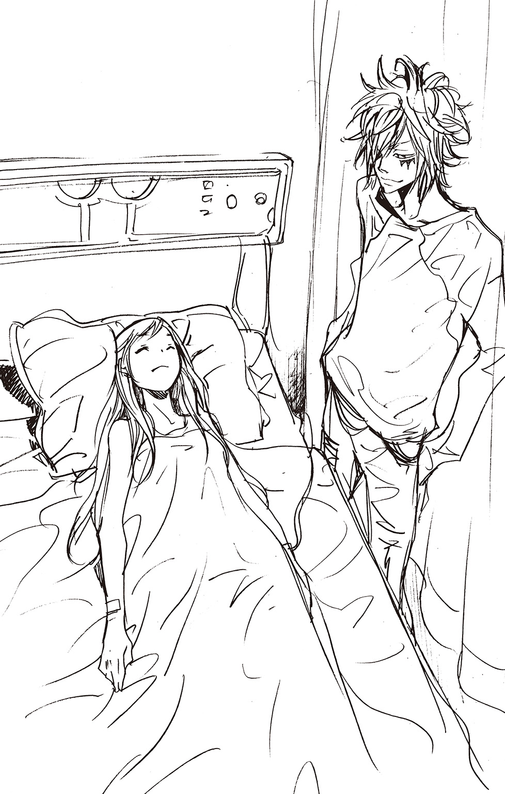

| 家庭教師ヒットマンREBORN! 隠し弾 4 弔いの花は散る | |
| 天野明 & 子安秀明 | |
この本は縦書きでレイアウトされています。
また、ご覧になる機種により、表示の差が認められることがあります。

この作品はフィクションです。
実在の人物・団体・事件などにはいっさい関係ありません。
それは――
マフィア界を震撼させた『ボンゴレリング争奪戦』の前に起こった知られざる事件。
六道骸の陰謀を退けた若きマフィアたちが、並盛町でつかの間の平穏を楽しんでいた――そんなとき。
遠き異国イタリアで――
王子たちの〝ゲーム〟が幕を開けようとしていた。
《一日目》
港町の裏通り。
石畳を駆けぬける一つの影。
さらに、それを追って、いくつもの影が疾走する。
月が厚い雲で隠された夜。
濃密な闇につつまれながらも、彼らの足取りにはまったく乱れがなかった。
まるで――
闇の中こそ、彼らの生きる世界であるかのように。
「......っ！」
前方を行く影が、不意に膝を折った。
かすかな苦痛のうめき声をもらし、その場にしゃがみこむ。
「..................」
ぐるりとまわりを囲む追跡者たち。
追われていた人物は、彼らを前髪ごしににらみつける。
雲の切れ目からもれる月光。
照らし出された逃亡者の顔は、まだ十代半ばに見える少年のものだった。
一方の追跡者たちは、少年よりはるかに年上で体格も優れている。にもかかわらず、緊張しているのは、明らかに彼らのほうだった。
「もう、おやめください」
リーダーと思われる男が、少年にむかって丁寧な口調で話しかける。
「普段のあなたなら、自分たちが束になってもかなわないでしょう。ですが、いまのあなたは、いつものあなたではない」
「..................」
少年の額から一筋の汗が流れ落ちる。
「さぁ......我らと共に......」
ダッ！
「!?」
はじけるようにジャンプし、追跡者たちの間を一瞬ですりぬける少年。
その瞬発力に、彼らはまったく反応できなかった。
「に、逃がすなぁっ！」
リーダーの声にハッとなった彼らは、少年を再び追い始めた。
「..................」
指摘された通り、少年は本来の力を出せない状態だった。いまも、絶え間なく襲いくる痛みが、彼を苦しめ続けている。
どうしようもない悔しさで、思わず唇をかんだ瞬間、
「............っ！」
脳天までつきぬける不意の激痛に、彼は声にならない悲鳴をもらした。
「........................」
限界だった。
目がかすんでいく......。
天才的な身体能力も、何の役にも立たない。
痛みにすべての気力をうばわれた少年は、そのまま力なく前のめりに――
「おいっ！」
倒れる寸前、二本の腕が少年の身体を支えた。
「何があった！ しっかりしろよ！」
危ういところで少年を受け止めたのは、二十歳前後に見える青年だった。
さらに、青年の後ろにいた黒スーツに口ひげの中年男が、
「おい、あれを見ろ！」
青年が顔をあげた瞬間、闇のむこうから追跡者たちが姿を現す。
「チッ......」
ターゲットをかかえた青年を見て、リーダーの男が舌打ちをもらした。
「おい......その人を、こちらに渡してもらおうか」
そう言いながら、腰にさした日本刀をぬき放つ。後ろにいる部下たちも、次々と武器を手に取った。
言うことを聞かなければ殺してでもうばい取るという意思表示。
しかし、それを見た青年は、
「いやだね」
「！」
即座に要求をはねつけられ、男の表情に怒気がみなぎる。
青年はすずやかな顔で、
「いきなり殺しあいやろーなんてやつらに渡せるかよ。つか、ンなことしちまったら、オレは一生部下に顔むけできねーぜ」
「貴様！ その御方が誰だか......」
「黙れッ！」
激昂した部下を、すかさずリーダーの男が止める。
「余計なことはしゃべるな。我々に言葉はいらない。必要なのは......」
男の目に殺気が満ちる。
「しゃぁぁぁぁぁぁぁぁぁぁぁっ！」
鼓膜をつき破るような気合と共に、男は青年にむかって刀をつき出した。
ビュオッ！
空気を裂く音。
刀が消えた。目に見えない何かが空気を薙いだ一瞬の間に。
「！」
男がハッと目を見開く。
青年の手に一本のムチが握られていた。なんと、男の刀はそのムチにからめ取られていたのだ。
「ま......まさか......」
信じられないという声をもらす男。
この青年は、自分が攻撃をしかけた瞬間に、あの長いムチで刀をうばったというのか。しかも、片腕に『あの人』をかかえたままで！
「まだやるつもりかよ」
余裕の笑みで男を見る青年。その目に、男たち以上の強い意志の炎が宿る。
と、後ろに控えていた黒スーツの男が、青年を止めるように肩に手を置いた。
「おまえまで熱くなるなよ、ボス。まだ事情もよくわからないんだぞ」
「つったって、ロマーリオ......」
そのとき、リーダーの男が、ハッと目を見開いた。
「跳ね馬のムチ......まさか......」
部下たちもあわてだし、
「どうします!? いま、我らが同盟ファミリーと事をかまえるのは......」
その言葉に、苦悩の表情を見せる男。しかし、彼の下した決断は素早いものだった。判断の遅れは、彼らにとって死に通じる。
「あれ？」
目を丸くする青年。
少年を追ってきた男たちは、いっせいに背をむけると乱れのない足取りで夜の闇へと消え去っていった。
「ンだよ......たいしたことねーやつらだぜ」
「あんまり無茶をするんじゃない。おまえはキャバッローネのボスなんだぞ」
「わかってるよ。でも、骸のことでツナを助けられなかったのが、まだ悔しくてさ......」
そう言って、青年――有力マフィア・キャバッローネファミリーの若きボス・ディーノは、気を失っている少年に視線を落とした。
「ほっとけないだろ、こーゆーの」
一方――
ターゲットの捕獲を断念した追跡者たちは、全員が戸惑いをあらわにしていた。
「こうなれば、本部にもどり判断をあおぐしかない......あの様子では、しばらく遠くには行けぬだろうし......」
「しかし、一体なにがあったのですか？ あの方が逃亡など......」
リーダーの男の顔が、ピクッと引きつる。
「.....................」
長い沈黙のあと、ぽつりと、
「......虫歯だ」
「は？」
男は、さらに苦々しい顔で、
「あの方は、虫歯の治療がこわくて逃げ出したのだ」
《二日目》
「おまえの名前は？」
「............」
「年は？」
「............」
「どこに住んでんだ？」
「............」
「仕事は何を？」
「............」
「じゃあ学生か？」
「............」
「......って、あのなぁ」
何も言おうとしない少年を前に、ディーノはやれやれと頭をかいた。
昨夜、ディーノは、意識を失った少年をこのキャバッローネの屋敷まで運んできた。
客間に寝かせた彼が目を覚ましたころを見計らって、こうして事情を聞きに来たのだが......。
「なんで、何も話してくんねーかな」
ディーノは知らなかった。彼が重度の虫歯だということを。そのせいで、まともに会話さえできないということを。
「ったく、何が気にいらねーんだよ。そんなふうにホッペタふくらませてさ」
ふざけた調子で、ディーノがパンパンになった頰をつつこうとした瞬間、
パアンッ！
「っ......！」
音高く手が払いのけられた。
手負いの獣のような敵意が、ディーノにむけて放たれる。
「お、おい......落ちつけって」
こちらに害意はないというように、ディーノは大きく両手を広げてみせた。
「つか、おまえ、大丈夫か？ さっきから、すげー苦しそうだけど」
「..................」
「いま医者を呼んでくるよ。どっかケガしてんなら、すぐに手当て......」
ブンブンブンッ！
少年が激しく首を横にふった。
「え？ 呼ぶなってゆーのか」
ブンブンッ！ 今度は縦に。
「無茶言うなって。強がることねーんだぞ。それに腕なら確かなやつを......」
ブンブンブンッ！
「遠慮してんのか？ ンなもんいらねーよ。困ってるやつを見捨てるのは、オレの流儀に反する......」
ブンブンブンッ！
「おまえも強情だなぁー。つか、どんどん顔色悪くなってるじゃねーか。いーからオレらにまかせろって」
必死に首を横にふる少年に背をむけ、ディーノは声をはりあげた。
「おーい、ロマーリオ！」
しばらくして部屋に入ってきたのは、昨夜ディーノと一緒にいた口ひげの男だった。ディーノの腹心のロマーリオだ。
「どうした、ボス？」
ディーノへ声をかけながら、ロマーリオの視線は油断なくベッドにいる少年へとむけられる。
彼は、少年をつれてくることに反対していた。
正体のわからない人間を近づけ、ディーノに万が一のことがあったら――
しかし、最終的には、困っている者を放っておけないというディーノに押し切られてしまったのだ。
「ロマーリオ、おまえに頼みがあるんだけどさー」
「なんだ？ そいつを追い出せってんなら、いますぐ......」
「違ぇーって！ ちょっと、こいつを診てほしーんだよ」
大柄で荒事に長けていそうな外見とは裏腹に、ロマーリオには医学の心得があった。
「医者を呼ぶ前に、とりあえずケガの具合だけでも知っときたくてさ」
ディーノがそう言った瞬間、少年がネコのような素早さで窓から飛び出そうとした。
「おっと！」
すかさず少年をつかまえるディーノ。
「コ、コラ、暴れんなって！ ロマーリオ、オレがおさえてる間にこいつを......」
「やれやれ。いつからキャバッローネは託児所になったんだ」
ため息まじりに、ロマーリオは暴れる少年に近づいていった。
「おい、もうちょっとしっかりおさえてくれよ」
「ンなこと言ったってこいつ......」
「キャバッローネのボスらしいところを見せてみろ。部下の前だっつーのに、たった一人にふりまわされるのか？」
「なにぃっ！ あー、わかったぜ、キャバッローネ10代目の実力を......って、つねるなよ、おいっ！ 地味に痛ぇーんだって！」
とてもマフィアとは思えない子どものような騒ぎがくり広げられる。
そして、先に白旗をあげたのはディーノたちのほうだった。
「ハァハァ......こいつ......」
少年から離れ、汗をぬぐうディーノ。
警戒感むきだしでいる少年を、ロマーリオもあきれ顔で見つめる。
「こいつ、診察の必要ないんじゃねえか？ オレには、ぜんぜん元気に見えるぜ」
「つったってよぉ......」
ねばるそぶりを見せるディーノだったが、すごい形相でこちらをにらんでいる少年に気づき、ため息と共に頭をかく。
「......わかった。もう、何もしやしねーよ」
「..................」
「でも、何かあったら絶対に知らせるんだぜ。いいか、絶対だぞ」
念を押すように言い残し、ディーノはロマーリオと共に客室をあとにした。
「ボス......あいつのこと、どう思う？」
「さぁな」
ロマーリオの問いかけに、屋敷の廊下を歩きながら答えるディーノ。
「まぁ、なんつーか、変わったやつだよな。前髪なげーし、顔もフーセンみたいにパンパンで......」
「なぁ、ボス」
ロマーリオが声のトーンを落とす。
「切り裂き王子って、おぼえてるか？」
ピタリ。
ディーノの足が止まる。
「それって、もしかして......」
「殺しの天才って言われてたガキさ。あのヴァリアーで一番のな」
ヴァリアー。その名は、広くマフィアの世界に知れわたっている悪名だ。
巨大マフィア・ボンゴレファミリーの闇の象徴。
暗殺や破壊工作といった数々の危険な任務に対して、驚異的な成功率を誇ったというエリート部隊。
しかし８年前、彼らは突如としてボンゴレ本体に牙をむいた。
その反乱は結局失敗に終わり、以来、今日までその名前が表に出ることはなかったのだが――
「あの髪型......そっくりじゃねぇか。素人とは思えない連中に追われてたのも、何かキナくさいしな」
「じゃあ、おまえ......」
「ああ。あいつはおそらく......」
「切り裂き王子のファンってことか？」
ロマーリオの肩がカクンと落ちる。
「......は？」
「いや、そーだろーとは思ってたんだ。頭の王冠みたいなの見てピンときたぜ。たしか本物もあんなのつけてた気が......」
「待て、オレが言いたいのは......」
「オレたちにさわらせてくれねーのも、王子のマネしてるからだろ。高貴な身分だから、簡単にさわらせねーとか。たしか、本物は王族の血を引いてるって......」
「おい、ディーノ！ オレはあいつが、その本物だっつってんだよ！」
大声をあげるロマーリオに、
「おいおい、なに言ってんだよ」
ディーノは明るく笑い、
「ンなわけねーだろ。だいたい、顔がぜんぜん違うじゃねーか」
「それは......まあ......」
「おかしな心配すんなって。あいつのことはオレにまかせろよ。なっ」
ポンポンとロマーリオの肩を叩き、再び歩きだすディーノ。
釈然としないながら、ロマーリオも彼のあとを追う。
重なる偶然――
別人に見えるほどの虫歯による顔のはれによって、事件はさらに思いがけない方向へとむかっていく。
《三日目》
「ぉい！ ざけてんじゃねぇぞぉ！」
ドガァンッ！
オーク製の重いテーブルが、青年の一蹴りで天井まで跳ねあがった。
腰まで届きそうな長い髪をなびかせたその青年は、野獣のような怒りをあらわにして、目の前にひざまずいている男に大声をぶつける。
「てめぇ、なめてやがんのかぁ！ あいつに逃げられたあげく、何もできねぇでノコノコ帰ってきただとぉ！」
怒声を受け、ひたすらかしこまっていたのは、少年を追っていた集団のリーダー格の男だった。
あのときはリーダーとしてふるまっていたが、この場ではその影もない。
それも当然で、目の前にいる青年こそ、彼の所属する組織・ヴァリアーの幹部だったのだ。
名前は――スペルビ・スクアーロ。
「ぉい！」
スクアーロが男の髪をつかみ、グッと自分のほうをむかせる。
「なんだ、てめぇ？ 文句でもあるってツラしやがって」
「し......しかたなかったのです......」
男の声が、恐怖にふるえる。
「まさか、ボンゴレの同盟ファミリーであるキャバッローネの〝跳ね馬〟が出てくるとは......我々の判断できるレベルをこえ......」
その瞬間、スクアーロの目に危険すぎる光が宿った。
「ひ、ひぃっ！」
髪をつかんだまま男の身体を軽々と持ちあげ、左腕に装着された剣を――
「そこまでにしなよ、スクアーロ」
スクアーロをやんわりといさめたのは、赤ん坊のように小柄な人物だった。
マーモンと名乗る彼もまた、スクアーロと同じヴァリアーの幹部である。
「ヴァリアーはまだ復活したばかりでしょ。無闇に手駒を減らすのはやめてほしいなぁ。あと、死体とかの処理もけっこうお金がかかるんだよね」
「......ケッ。守銭奴チビがぁ」
殺る気が失せたというように、男を解放するスクアーロ。
「キミ。とりあえず、次の指示があるまで待機してていいよ」
マーモンにそう言われた瞬間、男は転がるように外へ出ていった。
部屋に残ったのは、スクアーロとマーモンを含めたヴァリアーの四人の幹部たち。
「それにしても困ったもんねぇ、あの子には」
スクアーロの蹴り飛ばしたテーブルを元にもどしながらそう言ったのは、サングラスをかけた筋肉質の男――ルッスーリアだ。
そして、この場にいるもう一人の幹部――レヴィ・ア・タンが、無愛想に口を開く。
「どうする......ボスに知らせるか？」
「バカ言ってんじゃねぇぞ、レヴィ！」
すかさずスクアーロが声をはりあげる。
「虫歯治すのがこわくて逃げ出したぁ？ こんなことがＸＡＮＸＵＳに知られてみろ！ ただですむわけねぇだろうがぁ！」
ＸＡＮＸＵＳ――ヴァリアーの頂点に立つ男のことを思い出し、その場にいる全員が顔を青ざめさせる。
「し、しかし......罰を受けるのはやつだけでオレたちは......」
「逃がしたオレらも同罪に決まってんだろうがぁ！ ったく、あのガキぃ......これからが大事なときだっつーのによぉ......」
いらだたしそうに歯をくいしばるスクアーロの足もとで、マーモンがため息をつく。
「こんなことになるんだったら、無理やり虫歯を治そうとしなきゃよかったね」
「あらぁ。虫歯をなめたらいけないわ」
ルッスーリアが、子どもに注意する母親のような口調でたしなめる。
「グッと歯をくいしばれないだけで、攻撃するときの力は格段に落ちるわ。１００パーセントの力を出せないなんて、それで任務がつとまると思う？」
その言葉に答える者はいない。しかし、その場にいる全員が、彼の言うことの正しさを認めていた。
「困ったわねぇ、ホントにあの子ったらこわがりで。一体どうやって虫歯を治療してあげたらいいのかしら？」
「寝てる間にやるって、どう？」
マーモンが、自分の考えを口にする。
「目を覚ます前に、ササッとやっちゃうのさ。起きたら、もうスッキリって感じで。僕がいい眠り薬を用意するよ」
「でも......お高いんでしょう？」
「そこは特別ご奉仕価格。殺し一人分の半額というおどろきの依頼料で」
「まぁ、信じられないわ！ これはもうお電話するしか......」
「って、遊んでんじゃねぇぇぇぇっ！」
ドガァァン！
せっかく元にもどしたテーブルが、再び蹴り飛ばされる。
「寝てる間に治すぅ？ すぐ起きるに決まってんだろうがぁ！ それにあいつが簡単に眠り薬なんか飲むとは思えねぇ！」
「そうかなぁ？」
「そうだぁ！」
「そうかもねぇ......ちぇっ」
「まさか、てめぇ、オレたちをだまして金だけ取るつもりで......」
「ここは、基本に立ち返ったほうがいいのではないか？」
黙って話を聞いていたレヴィが、手をあげて発言する。
「基本？ 基本って何だぁ？」
「虫歯を治すために、古来より伝わる方法があるだろう」
レヴィの細い目の奥で、自信に満ちた光がちらつく。
「虫歯に糸をくくりつけ、それを勢いよく引っぱるという......」
ドゴッ！
「ぐぉ......！」
スクアーロの膝がまともに腹に入り、レヴィの顔が苦しそうにゆがむ。
「バカか、てめぇは！ まず最初にその糸をどうやってつけるんだよ！」
「きっ、貴様！ 誰がバカだと！」
ガッ！
すかさずスクアーロをなぐり返すレヴィ。
「何してやがんだ、てめぇ！」
たまっていたイライラをぶつけあうように、二人の間でなぐりあいが始まり――
「これよ！」
ルッスーリアが、ポンと手を叩く。
「あの子の顔に、思いっきり愛の拳をお見舞いするのよ。そうすれば虫歯なんてポーンと飛んでいくわ。......まぁ、他の歯もぬけちゃうかもしれないけど、それは気にしないってことにして......」
「で、誰がそれやるの？」
ぽつりと言うマーモン。
「なぐろうとしたりなんかしたら、あっちはまちがいなく本気で反撃してくるだろうね。確実に、こっちもタダじゃすまないよ」
「あ」
ルッスーリアの額に汗がにじむ。
「そ、そうね......ここは、やっぱり、みんなで協力して......」
「貴様がやれ」
「てめぇがやれ」
「ルッスーリアがやってよね」
意見の一致する三人。ルッスーリアの顔を流れる汗が、滝のような量になる。
「チッ......とにかく、何がなんでもやつをつれもどさねぇとなぁ」
苦々しい顔で、手のひらにパンと拳を打ちつけるスクアーロ。
「あんなやつでも、これからのヴァリアーには欠かせねぇ戦力だ」
「そうだね。彼も僕らと同じ......ヴァリアーの幹部なんだから」
マーモンの言葉が、一同に重々しく響いた。
《四日目》
「おい......大丈夫かよ、ボス？」
「あんま......大丈夫じゃねーかもな」
ロマーリオにむかって、弱々しい笑みを見せるディーノ。
その顔は、たくさんの傷やアザで痛々しく彩られていた。鼻には、鼻血止めのティッシュもつめられている。
「なぁ......もうほっとかねぇか？」
「バーカ。ほっとけるわけねーだろ」
正体不明の少年を保護してから、数日が経過していた。
にもかかわらず少年はまったくディーノたちに打ちとける様子を見せず、その素性もわからないままだった。
ロマーリオは苦々しい顔で、
「あいつ、オレたちに『世話になってる』って感覚がないとしか思えないぜ。いつでも偉そうにしやがって」
「しょーがねーだろ、王子のつもりなんだからさ」
「あのなぁ......」
ため息まじりに頭をかくロマーリオ。
ディーノは彼を安心させるように、
「とにかくオレにまかせろって。ぜってー、あいつの心を開かせてやるからさ」
「オレは、先におまえが倒れるほうに全財産賭けるけどな」
「ハハハ......まぁ、見てろよ」
まったくめげることのない笑顔を見せ、ディーノは廊下のむこう――少年のいる客間のほうへと消えていった。
「ったく、あいつは......」
ロマーリオは、今日何度目になるかわからないため息をこぼした。
と、その直後、
「大変だぁ―――っ！」
血相を変えたディーノが、ロマーリオの前にもどってきた。
ロマーリオも、あわてて、
「どうした、ボス！」
「............いなくなった」
青ざめた顔で、ディーノが口を開く。
「あいつが、いなくなってるんだよ！」
《五日目》
風の強い深夜。
ディーノのもとから逃げ出して丸一日が経つ。
ベルフェゴール......通称ベルは、人のいない港の倉庫街にずっと身を隠していた。
できれば、もっと安全な場所まで行きたかったが、歯の痛みが耐えられないほどになったいまの状態では、ここにじっとしているしかなかった。
「..................」
無言のまま、濡らしたハンカチを頰に当てるベル。水はすぐにぬるくなり、はっきり言ってなぐさめにもならない。
まともに口をあけることすらできず、痛みのせいで寝ることもできない。
ベルの疲労は限界に達していた。
それでも意識を保っていられたのは、さすが『プリンス・ザ・リッパー』と呼ばれる凄腕の殺し屋というところか。
「..................」
やっぱり歯医者に行こうか――
そんな考えがよぎるたび、ベルは勢いよく頭をふる。
あんなところに行ってたまるか！
こわいなんていう理由じゃない。人前でまぬけに大口をあけるのが、ベルには耐えられないのだ。
そんなカッコ悪いこと、王子である自分にできるはずがない！
「..................」
ここ数日のことを思い返すベル。
まさか、キャバッローネファミリーの〝跳ね馬〟に助けられるとは......。
ちょっぴり面倒なことになったという気はしたものの、これでヴァリアーの追っ手から逃れられると思った。
だが――
もうこれ以上、つきまとってくるディーノには耐えられなかった。
だから、ベルはまたこうして逃げ出してきたのだ。
「..................」
ズキズキズキズキ......――
歯痛は日増しに激しくなってくる。どんなときも痛みが気になって、何ひとつまともにすることができない。
このまま自分はどうなってしまうのか......そんな不安がふくらみ始めた――
そのとき、
「見つけたぜ」
ビクッと顔をあげるベル。
いつもの彼なら、絶対にありえないことだった。こんな簡単に、他人に背後をとられるなんて。
「ったく......手間かけさせやがって」
ホッとした顔でベルに近づいてくるディーノ。
「まぁ、無事でよかったぜ。出ていったってわかったときは本当にあせったからな」
「..................」
「おまえ、追われてんだろ。なのに外に出るなんて、一体なにがあったんだ？ 用事ならオレたちに言ってくれれば......」
ディーノの言葉を聞くたび、ベルの中で歯の痛みに負けないくらいムカムカが大きくなっていく。
こういう善人面した人間が、ベルは何よりキライだった。
「とにかく帰ろうぜ。話はそれからってことでさ」
ベルの気もちにまるで気づかず、ディーノはその手を取ろうと――
チュイ―――――――ンッ！
「っ!?」
コンクリートがくだかれ、かすかな粉塵が舞いあがった。
「伏せろぉぉぉっ！」
叫ぶと同時に、ディーノはベルの頭をかかえ物陰へとダイブした。
直後、彼らの立っていた場所に、次々と銃弾が撃ちこまれた。
長距離ライフルによる狙撃――
瞬時に状況を理解したディーノは、物陰に隠れたまま、慎重に周囲をうかがった。
「チッ......最悪のタイミングだぜ」
ディーノは、キャバッローネ総出でベルのことを捜索させていた。すこしでも範囲を広げるため一人一人手わけさせており、いまは部下のまったくいない状態なのだ。
「早くロマーリオたちを呼ばねーと......」
ケータイを取り出したその瞬間、
パシンッ！
「なっ......!?」
ディーノの手からケータイが払い落とされ、コンクリートの上をすべっていく。
「おまえ、何を......」
思わぬ行動に出たベルを、おどろきの目で見るディーノ。
ベルにしてみれば、それはとっさの判断だった。
ここで仲間を呼ばれれば、キャバッローネの屋敷につれもどされる可能性が非常に高くなる。
それだけは絶対にイヤだった。
「お、おいっ！」
ベルが物陰から飛び出した。
すかさず彼のまわりに、ライフルの弾がはじける。
「バカ野郎ッ！ なに考えてやがんだ！」
あわててディーノも飛び出す。
どこから銃弾が来るかもわからない極限状態のなか、ディーノはベルの背中だけを見て走った。
そして――
「！！！」
同時だった。
歯の痛みで注意力の落ちたベルが足をすべらせたのと、あせるあまり足もとの見えなくなったディーノがつまずいたのは。
勢いの止まらないディーノは、前を走っていたベルにぶつかり、二人はそのまま共に転がって――
ザッパァァァァァァァァンッ！！！
夜の海へと、その姿を消した。
《六日目》
「ぉい！ まだ見つからねーのか、ベルの野郎はぁ！」
「もぅ、落ちつきなさいよ」
部下にむかってどなり散らすスクアーロを、ルッスーリアがたしなめる。
「しかたないじゃない。街は、キャバッローネのマフィアたちであふれてるのよ。下手に動いて、私たちのことを知られるわけにはいかないでしょ」
「チィィッ！」
いらだちがおさまらないというように、手近にあった木箱を蹴り飛ばすスクアーロ。
いま彼らは、数名の部下と共にキャバッローネの傘下にあるこの港町に潜入していた。
「しかし......惜しかったな」
「はぁ!?」
ぼそりと声をもらしたレヴィに、スクアーロが怒りの形相でつめよった。
「何が惜しかったってんだぁ!?」
「決まっている。オレの作戦が......」
「バカか、てめぇはぁ！ 最初から、うまくいくわけなかっただろうがぁ！」
「ベルの虫歯をライフルで撃ちくだくなんてなぁ！」
レヴィは、ムッと眉をひそめ、
「しかし、近づけば気づかれる。気づかれれば暴れる。ならば、気づかれない遠くから一気に......」
「虫歯と一緒にベルの野郎も殺っちまうつもりかぁ！ このバカがぁ！」
「貴様......何度もバカバカと......」
「ハァ～イハイ。いまはケンカしてる場合じゃないでしょ」
一触即発の二人を、すかさずルッスーリアが止める。
スクアーロは、舌打ちと共にレヴィに背をむけ、昨夜、狙撃を行った部下――いまは情報の収集にあたらせている男にむかって声を荒げる。
「ぉい！ キャバッローネのほうで、なんかつかんだ様子はねーのか？」
男は、スクアーロの怒気におびえつつも、新しい情報が入っていないことを報告する。
夜の海に消えたベルとディーノは――
昨夜から行方不明のままだ。
「こうなったら、マーモンに頼むしかないわよねぇ」
「チッ......背に腹はかえられねぇ」
「......だな」
ルッスーリアの提案に、しかたなくといったようにうなずくスクアーロとレヴィ。
そんな一同の会話を聞き、隠れ家の隅に座っていたマーモンが立ちあがる。
「これは、ヴァリアーの任務とは別件だからね。それで......」
「いくら払ってもらえるのかな」
《七日目》
快晴。
まぶしすぎる陽光と規則正しい波音が、岩礁に寝転んだディーノをつつみこむ。
「............ハァ」
ライフルの狙撃から逃れ、夜の海に飛びこんでから、丸一日以上が過ぎた。
運悪くその夜は大シケで、ディーノたちは思ってもいないほど遠方まで流されてしまった。
偶然近くに浮いていた木片につかまることができなかったら、かなりの確率でディーノたちは海の藻屑と消えていただろう。
しかし――
こうして、とりあえずは助かったといっても、いまの彼らはまったく安心できる状態になかった。
「おい......船とか見えねーか？」
「..................」
ディーノの横で、同じように寝転んでいるベル。彼もまた憔悴しきっており、それに加えて歯の痛みがさらなるダメージとして重くのしかかっていた。
海に入ってから数時間――夜が明けるころ二人はこの小さな島に流れついた。
岩と砂ばかりの本当に小さな島で、当然のように他の人間は誰もいなかった。
二人は、さらなる危機に直面したことを思い知らされた。
無人島への漂流という――予想もしていなかった危機的状況に。
「なんで、船とかぜんぜん通ってくれねーんだよ！ ＳＯＳ出そーにも、これじゃどうにもできねーだろ！」
やり場のないいらだちをこめ、空にむかって叫ぶディーノ。
隣にいるベルも、がまんできないというように顔をしかめる。
こんな状況になってしまったことへのいらだちだけではない。ディーノの大声は、ズキズキと痛む虫歯にやたらと響いた。
「ったく、まいったよなー......この島、食いモンどころか水もないしよ......」
「..................」
「このまま寝てたって、どうにもならねーのはわかってるさ......けど、泳ぐにしたって、どっちに行けば陸につくのか......」
「..................」
「ハァ......せめて、ケータイがあればな......あんときなくしたりしなけりゃ......」
ザッ！
不意にベルが起きあがった。
長い前髪の奥にある目を血走らせ、ディーノに襲いかかる。
「ちょっ、おまえ何やっ......くっ！」
馬乗りになったベルが、ディーノの細い首に指をかけようとする。
ギリギリでベルの腕をつかんだディーノは、身体を起こした反動でなんとか彼をふり払った。
「おい！ なに考えて......っ！」
言葉の途中で、息をのむディーノ。
獣のようにこちらをにらむ瞳。
ベルは――完全にキレていた。
重なる肉体と精神のダメージが、ついに彼のがまんの限界をこえたのだ。
「ったく......こんなことしてる場合じゃねーのによ」
やれやれと頭をかきながら、ディーノは静かな目でベルを見つめた。
これまでとは、まるで様子が違う。限界状態にある彼に、中途半端な説得が通じるとは思えなかった。
ならば、やることは一つ――
「......来いよ」
挑発するように、ベルを逆手で招くディーノ。
ただやさしいだけでは、マフィアのボスはつとまらない。
「とことん、やりあおうぜ。おまえの目が覚めるまでな」
その言葉を聞いた瞬間、おさえていたものがあふれるように、ベルの全身から激しい殺気がほとばしった。
彼の手に鋭利なナイフが握られ、太陽の光をギラリとはね返す。
デイーノもまた自分の武器――跳ね馬のムチを取り出し、不敵に笑ってみせる。
切り裂き王子と跳ね馬――
マフィア界屈指の実力の持ち主である両者が――いま......！
パァァァァァァンっ！
激しく武器がぶつかりあう。
そして、
「......あ」
同時にもれる間のぬけた声。
二人の手から、武器が消えた。
なんと、激突と同時に、両者とも武器を落としてしまったのだ。
「......っ！」
「おっとっと！ 油断大敵だぜ！」
落とした武器をあわてて拾うベルとディーノ。
そして再び、焼けつくような気迫をみなぎらせてむかいあう。
「行くぜ！」
「.........！」
同時に大地を蹴る両者。
高速でふるわれたナイフとムチが空中で交錯し――
「あれっ!?」
「......っ！？？」
ディーノの手からすっぽぬけるムチ。ベルもまた、足もとの石につまずいた拍子にナイフを落としてしまう。
「くっ......このっ......」
「.........！ ......っ！」
ベルとディーノは、あせりを隠そうともせず必死に武器を持ちなおす。
キャバッローネのボス・ディーノ......究極のボス体質といわれる彼は、実は部下の見ていないところでは実力の一割も発揮できない人間だった。
そしてベルも、虫歯による疲労や睡眠不足で、素人レベルにまで力を落としていた。
まったく実力を出せないまま、二人は不毛な戦いをくり広げる。
「......っ！」
武器を持つことをあきらめたベルが、素手でディーノに飛びかかった。ディーノも真正面からそれを迎えうつ。
岩礁の上をごろごろ転がりながら、たがいに身体をつねったり髪を引っぱったりするディーノとベル。
子どものケンカとまるで変わらない争いが延々とくり広げられ――
ガン！
つき出した岩に、ディーノの後頭部が偶然激突した。
打ちどころが悪かったのか、彼はそのままあっさり意識を失ってしまう。
「..................」
荒い息で、ぐったりとなったディーノを見おろすベル。
落としていたナイフを拾い、彼の首にふりおろそうとして――
「..................」
やめた。
なんだか、バカバカしくなった。
こんなところで、こんなことをしている自分の何もかもが。
と、
「あ......」
ベルは気づいた。
あの忌々しい痛み......何日もの間苦しめられた歯痛が消えていることに。
口の中の異物に気づき、手のひらに吐き出してみる。
それは、穴のあいた一本の歯だった。
「......取れた」
あまりにもあっけなく――
ディーノとの取っ組みあいのなかで、ボロボロの虫歯はぬけ落ちていた。
おそらく、岩の上を転がったときにぶつけた衝撃によるものだろう。かすかな痛みこそ残るものの、それは長く苦しめられた激痛に比べれば、ほとんどないも同然だった。
「いししししししししっ！ あ――っ、気分ソーカイ―――――――っ！」
よろこびのあまり、笑いながら岩礁の上を跳びはねるベル。こうして声をはりあげるのも何日ぶりのことだろう。
と、そこに、
「やっと見つけたぞ、ベルぅぅっ！」
聞きおぼえのある大声にふりむくと、そこにはボートでこの無人島へ乗りつけたスクアーロの姿があった。
目標を探し当てるマーモンの『粘写』の術により、彼らはキャバッローネより先にこの場所を割り出したのだ。
「ベルぅっ！ てめぇ、いつまで跳ね馬のヤローと遊んでるつもりだぁ！」
「それなら、もー終わったよ。ほら」
ベルに指し示され、倒れているディーノに気づくスクアーロ。
「跳ね馬!? てめぇ、まさか......」
「殺ってはねーよ。いま同盟ファミリーと問題起こしちゃマズイだろ」
「お、おう......」
「さー、ボスのところに帰ろーぜ、スクアーロ」
いままでのことなどなかったかのような顔で、ベルはスクアーロの乗ってきたボートへ跳びうつろうとし、
「あ」
その直前で、足を止めた。
そして、突然のベルの変化に戸惑っているスクアーロにむかって、
「跳ね馬も一緒につれてくよ。ほら、さっさとこっちに運んで」
「あぁ!? なんでンなこと......」
「オレ、他人に借りとか作らない主義なんだよねー」
「知るかぁ！ だったら、てめぇが自分でやりやがれぇ！」
「やーだね。そんなメンドイこと、オレがするわけねーだろ......」
「だって、オレ、王子だしっ♪」
× × ×
後日――
ディーノは、無事、仲間たちのもとへ送り届けられた。
それからしばらく、ディーノは消えた少年のことを探し続けたが、ほどなくして起こった『ボンゴレリング争奪戦』のため中断を余儀なくされる。
彼は知らなかった。
リング争奪戦の敵――ヴァリアーの中にあの少年がいたことを。
そして、再会しても気づかなかった。
虫歯でパンパンに顔をはらしたベルと、それが治ってスッキリした顔のベルが、まったくの別人に見えたために。
何かあったようで――
やっぱり何もなかったような――
そんな、ディーノとベルの一週間だった。
巨大マフィア・ボンゴレファミリーの、10代目ボスの座をかけて始まった『ボンゴレリング争奪戦』。
その最中、『黒曜センター』と呼ばれる廃墟に、人知れず潜伏する者たちがいた。
10代目候補の一人であるツナこと沢田綱吉と激戦をくり広げた脱獄囚・六道骸をリーダーとあおぐ――通称『黒曜中』のメンバーである。
そして――
事件は、起こった。
一、《柿本千種の証言》
「......めんどいことになった。こうして説明するのも......めんどい。骸様の《器》として生きるあの女と出会って数日後。異変を感じた最初のきっかけは――」
柿本千種は、危険に敏感だった。
マフィアによる人体実験、そのマフィアが崩壊してからの逃亡生活、くり返された捕縛と脱獄――
14歳の少年としては、あまりに過酷すぎるそれらの経験が、彼に人並み以上の危機への感知能力を身につけさせていた。
その能力が、千種に告げていた。
自分をとりまく空気が......平穏時のそれとは微妙に異なっていることを。
黒曜センター。
かつて複合娯楽施設だった広大な廃墟が、いまの千種たちの隠れ家だった。
台風による土砂崩れで破壊された敷地内に、もはや華やかだったころの面影はない。
千種が歩いているのは、舗装がめくれ、土砂のむきだしになった道だ。
その道を歩きながら、彼は感じていた。
こちらを遠まきに見つめてくる......おだやかでない複数の気配を。
「.........めんどい」
待たされるのは、好きではない。
千種は、大きな茂みの奥に潜んでいる影にむかって、挑発するように殺気をぶつけてみせた。
と、次の瞬間、
ゴォォォォォォォォォォォォッ！
雑草をかきわけ、猛々しい咆哮と共に飛びかかってきた複数の影――
それは、黒曜センターに棲みついた野良イヌたちだった。
「..................」
千種は、冷静だった。
数々の修羅場をくぐりぬけてきた彼にとって、この程度、危険のうちにも入らない。
シュルルルルルルルルルル！
小さな物体が、野良イヌたちの間を風のようにすりぬける。
いっせいにあがる苦痛の鳴き声。
千種のあやつるヨーヨーに似た武器ヘッジホッグの攻撃を受けた野良イヌたちは、先を争うようにして逃げ出していった。
千種の表情に、かすかに暗い影がよぎる。
以前から、この黒曜センターに野生の動物が棲みついているのは知っている。
動植物園があったためか、その種類は野良イヌに限らず多種多様だ。
しかし、それらの獣が、これまで千種たちに牙をむいてくることはなかった。
野生の動物は、本能で相手の実力を知る。自分より強いと判断した相手には、決して襲いかかることはない。それが、彼らの生死に関わるからだ。
「..................」
小さなトゲのような不安。
本気で動くには確証が少なく、無視をするには癇にさわる。
「......めんどい」
結局、千種は、何事もなかったように再び歩き始めた。
それが――後に、大きな事件へつながるとまでは気づくことなく。
× × ×
「......ただいま」
食料の入った紙袋が、かたむきかけたテーブルの上に置かれる。
黒曜センターにあるもっとも大きな建物。ここで千種たちは寝泊りをしていた。
窓という窓は割れ、床や天井もあちこちでひび割れているが、長く裏社会で生きてきた千種にとっては、特に気にするほどのことでもない。
それよりも――
いま、彼が気になっているのは、
「犬」
「んあ......」
ボロボロのソファーから、気のない返事がかえってくる。
城島犬。
千種と同じく、幼いころから骸につき従ってきた少年だ。
「犬......そこにいたんだ」
「見りゃ、わかんだろ......」
「いや、わからなかったから」
ぽつり、つぶやく千種。
そこは一種、異様な空間になっていた。
ネコ、イヌ、鳥......。
色とりどり様々な種類の動物たちが、好き勝手に部屋の中を動き回っている。
まさに、小さなサファリパーク。
それはソファーの上も例外ではなく、返事がなかったら、より集まったネコたちの下に犬が埋もれているとは気がつかなかっただろう。
「この動物たち、犬がつれてきたの？」
「ハァ？ ンなわけねーびょん」
買い物に出る前は、いつもと変わりなかったはずのこの部屋。
いや、部屋の中だけではない。ここに来る間も、やたらと動物の姿が目についた。
一時間ほど外出しただけで、どうしてこうなってしまったのか――
「..................」
よってくる小動物を追い払いながら、千種は無言で犬を見つめる。
あふれかえった動物たちもそうだが、それ以上に気になっていたのは、目の前にいる犬のことだ。
「......食べる物、いろいろ買ってきた」
「んー......」
「フルーティーなガムもある」
「んへー......」
千種は確信した。
犬が、普段の犬ではないことを。
いつもだったら、食べ物と聞いて反応しないはずがない。
「犬......」
一人で買い物に出る前から、おかしいとは思っていた。
落ちつきのない犬は、一か所にジッとしていることを嫌う。買い物ともなれば、ゲームに熱中しているときをのぞき、ほぼ確実についてくる。そして、必要のない駄菓子を何度もねだって、限りある潜伏資金に微妙にダメージを与えてくる。
そんな犬が――いまはまるでぬけガラのようだ。
そもそも、建物の中に大量の動物があふれかえっているこの状況が普通ではない。いくら大ざっぱな性格の犬でも、追い払わずにいるとは思えないのだが――
「んにぃぃ......」
動物だらけの部屋に寝そべり、ゆううつそうにのびをしてみせる犬。
たんに元気がないのとは、何かが違う。
犬の異常の原因が、つきあいの長い千種にもまったくわからなかった。
「......めんどい」
軽く頭をふって考えるのをやめ、千種は手っ取り早く彼に聞いてみることにした。
「犬......どこか痛いとことかない？」
「痛いとかは......ねーけど......」
「けど？」
「なんら......なんら、ヘンなんらよなぁ。んにぃ......よくわかんねーびょん」
イライラと頭をかきむしる犬。その動作にも力が感じられない。
千種の口から、ため息がもれる。
スキあらば千種の足をよじ登ってこようとする小動物たちの存在が、さらにダウンな気分にさせる。
これ以上、ここにいても何もわかりそうにない。
となれば、この建物にいるもう一人の人物に聞くしかないだろう。
「......あ」
部屋を出ていく直前、千種は思い出したというようにふり返り、
「そこの食ベ物、勝手に食べないでね。一週間分の食料が......」
忠告はむだに終わった。
犬は、ピクリとも動いていない。
その代わり、紙袋に大量の動物たちが群がっていた。
「......めんどい」
食い散らかされていく食料から、視線をはずす千種。
いまは、この事態をなんとかするのが先だと自分に言い聞かせ、千種は獣のにおいと鳴き声であふれかえる部屋をあとにした。
二、《クローム髑髏の証言》
「力になりたいと......思った。骸様の......犬と千種の......みんなの......私がみんなの力に。だから私......すこしでも......骸様に近づきたかった。だから......――」
千種がその部屋に入ったとき――
最初に耳に届いたのは、苦しそうなか細い吐息だった。
「ハァ......ハァ......」
三叉の槍を片手に持ち、もう一方の手で額の汗をぬぐっている少女。
右目を覆った眼帯と、一種独特なヘアスタイルが、その印象を平凡という言葉から遠ざけている。
クローム髑髏――
千種たちの主・六道骸にとって、現在もっとも利用価値のある人物。
沢田綱吉との戦いに敗れた骸は、いまも〝復讐者の牢獄〟と呼ばれる場所で、囚われの身となっている。
しかし骸は、その特異な能力で、自分の精神と能力を他者に憑依させることを可能とした。
その《器》としての才能を持つのが、クロームだ。
骸の《器》となる直前、クロームは事故によって内臓の一部を失っており、骸の力がその身体に満ちていなければ、いつ息絶えてもおかしくないという状態である。
しかし、千種にしてみれば、そんな事情はどうでもよかった。
重要なのは、命を救われたことにより、彼女が骸にむける忠誠心が客観的に見てまず及第点といえる......その一点についてのみである。
「......もう一度」
呼吸の落ちついたクロームは、骸とつながる鍵でもある三叉の槍を両手で握り、静かに目をつぶった。
彼女が何をしているのかすこし気になったが、千種は自分の用件を優先させることにした。
「クローム」
「っ」
不意の呼びかけに、クロームの目がパッと開かれた。
瞬時に、白い頰がほの赤く色づく。
「ち......千種......」
あたふたと落ちつきのない動きを見せるクローム。
千種は、小さく息を落とし、
「キミに聞きたいことがある」
「え......？」
かすかにクロームの目が泳ぐ。
「わ......私に......？ 何......？」
「......いろいろと」
そして、クロームに、犬や動物たちのことを聞こうとした――
そのとき、
「......っ」
千種に緊張が走る。
足もとに忍びよっていた全長二メートルはある毒ヘビに気づいて。
「......だっ、だめ！」
すかさず攻撃しようとした千種を、あわててクロームが止める。
「あ、あの......その子は......」
「！」
さらに目を見開く千種。
壁の隙間や天井の穴から、次々と毒ヘビがはい出してきた。
あっという間に、千種とクロームの周囲を埋めつくす毒ヘビたち。
まるでホラー映画のような光景。
しかし、千種はそれに見覚えがあった。
「畜生道」
クロームが、ピクッとふるえる。
「やっぱり、そうなんだね」
「............」
申しわけなさそうな顔で、クロームはコクリとうなずいた。
畜生道――
それは、六道骸が持つ〝六道輪廻〟と呼ばれる戦闘能力の一つ。人を死に至らしめる危険な動物を召喚する能力だ。
「まさか、骸様がここに......」
そうつぶやいた直後、ありえないと頭をふる千種。
クロームは、骸の精神と能力の《器》となる力を持っている。しかし、そう簡単に骸が出現できるわけではないし、それ以前にいまここに現れる理由がない。
「じゃあ、ひょっとして......」
かすかにおどろきをにじませつつ、千種はクロームに視線をむける。
「この畜生道......キミの意思で？」
コクリ。再びうなずくクローム。
「ちょっとだけ......ちょっとだけだけど......」
千種はあらためて気づく。
出会ったばかりのクロームの力を、自分がまだほとんど知らないということに。
「みずからの意思で、能力を使えるなんて......」
「まだ......まだぜんぜんダメだから......すこしでもうまくなりたくて練習を......」
「そんな話はいい。いまはとりあえず、このヘビたちを下がらせて」
「あ......う、うん」
クロームはあわてて三叉の槍をギュッと握り、目を閉じて精神を集中し始めた。
しかし、
「..................」
「あ......」
「......クローム」
「あ、あの......」
「これは、どういうこと？」
淡々とした千種の声に、かすかにイラッとしたものがまじる。
毒ヘビは消えなかった。それどころか、さらに数を増やし、床を覆い隠すほどにまでなっていた。
「っ......」
あまりの数の多さに、居場所をなくしたヘビが、千種の足にからみついてくる。
畜生道で呼び出されるのは、人を殺せる力をもった生物だ。もし咬まれたりしたら、千種もただではすまない。
「クローム。早くこのヘビを......」
「う、うん......」
クロームは、再び槍にむかって精神を集中し始めた。
そして――
× × ×
クチバシのするどいカラス、毒々しい色のトカゲ、でっぷり太ったカエル、カサカサとはい回るムカデ、拳をこえる大きさの巨大グモ――
「あ、あ、あの............」
あわあわと、うろたえるクローム。
部屋の中は、ヘビに加えて、さらに増えた凶悪な生物たちで埋めつくされていた。
「クローム......まさかキミ......」
千種は、やっと気づく。
クロームは、まだ畜生道の力をコントロールできていない。
おそらく、建物の中にあふれている他の動物たちも、不完全な畜生道によるなんらかの影響を受けているのだろう。きちんと制御された畜生道なら、戦闘に使えない動物を呼びよせるはずがない。
「......めんどい」
いつもかぶっているニット帽の上から、頭をかく千種。
おろおろしているクロームを見る限りでは、彼女にこの状況をどうにかできるとは思えない。
しかし、力ずくでどうにかしようとすれば、外で遭った野良イヌのように、錯乱して襲いかかってくる可能性がある。
畜生道という力におかされた生物たちの精神は、きわめて不安定な状態にあるといえた。
「......めんどい」
再度つぶやく千種。
大量の生物たちに囲まれ、普通の者ならパニックまちがいなしの状況のなか――
千種は、いつもと変わらぬ無表情のまま、解決策を静かに模索する。
「......ふぅ」
結論はすぐに出た。
一番手っ取り早いのは、制御できない畜生道の力を直接止めてしまうこと。
つまりは、一時的に、その力の発生源を断ってしまうことだ。
口と鼻をおさえるなり、首をキュッとひねるなり、強烈な当て身をくらわせるなり......とにかくクロームを気絶させてしまえば、畜生道は解け――
ウォォォォォォォォォォォォォォォォォォォォォォォォォォォォォォォォォォォォォォォォォォォォォォォォッ！！！
「っ！」
「きゃっ......」
突然のことだった。
空気が津波となって押しよせてきたような咆哮、咆哮、咆哮！
さすがの千種も、顔をしかめて両耳をふさぎ、肌にビリビリ来るその轟音に耐える。
吼えていた。
その場にいる獣......いや、おそらく黒曜センターにいるすべての動物たちが。
「！」
考えるより先に、身体が反応した。
人間をはるかにこえる瞬発力で飛びかかってきた獣たちを、千種はヘッジホッグの一閃で払いのけた。
しかし、すぐさま大量の獣たちが、恐るべき勢いで押しよせてくる。
「これは......」
千種の口から、おどろきの声がもれる。
獣たちは、恐慌状態に陥っていた。
大量の凶悪な獣たちが、何の前ぶれもなくいっせいにだ。
千種への敵意は感じられない。
しかし、無軌道に暴れまわる獣たちは、天災のように千種にも襲いかかってくる。
シュルルルルルルルル！
ヘッジホッグが、縦横無尽にうなりをあげる。
しかし、押しよせる獣たちの勢いが弱まる気配はない。
ちらりと視線をむけると、クロームは獣の群れの中でぼうぜんと立ちつくしていた。やはり、彼女に期待するのは無理なようだ。
となれば、
「......いくよ」
慎重に、ヘッジホッグの狙いをつける。
意識ごとその力を断つべく、千種はクロームにむかってヘッジホッグを――
ガッ！
「っ!?」
後頭部への衝撃。
完全な不意打ちだった。
ヘビや野良イヌなどの攻撃ではない。
これは――
「け......犬......」
視界がかすんでいくなか、千種は見た。
舌をだらりと垂らし、ハッハッと激しく吐息をもらす犬が――
獣たちと、同じ目をしているのを。
× × ×
「......う......」
千種が目を覚ましたとき、部屋の中には誰もいなかった。
犬も、クロームも。
そして、部屋を埋めつくしていた大量の獣たちも。
「..................」
自分のケガの状態を確認――通常行動に支障なし。
周辺の状況を確認――ひとまずこちらに害となる存在は確認できず。
それらのことを、一つ一つ冷静に判断してから、千種はあらためて思考に入る。
（犬......）
とつぜん襲いかかってきた犬。彼は、明らかに普通の状態ではなかった。
マフィアによる人体改造で、犬は獣の能力を発動できる身体となっている。
そのため、クロームの暴走した畜生道の影響を受け、理性を失ってしまったのだろう。
犬の調子がおかしかったことも、それで説明がつく。
しかし、まだ疑問は残る。
犬とクロームは、どこへ消えたのか？
そして、動物たちが、突然暴れだした理由とは？
凶暴化した動物の目には、明らかなおびえの色があった。
彼らは本能で感じ取っていたのだ......自分たちをはるかにこえる強大な存在を。
それは一体、何者だというのか――
「......めんどい」
一言つぶやき、千種は歩きだす。
考えても答えが出ないなら、行動するしかない。
と、
「っ......」
彼の耳が、獣たちの鳴き声をとらえる。
建物を出た千種は、そのまま声の聞こえてくるほうへと走った。
そして――
「！」
千種の瞳が、驚愕にゆれた。
三、《雲雀恭弥の証言》
「群れるやつらは咬み殺す――」
雲雀恭弥は、そこに立っていた。
優雅に――トンファーを握った両手を、天使のようにふわりと広げながら。
それを遠まきに取り囲んでいるのは、おどろくべき数の動物たち。
その......種類も何もかもが違う動物たちの中に、しかし、共通するものが一つ。
恐怖――
敵意をむきだしにしながらも、本能的な感情はおさえようがないのか。
雲雀が前に進むたび、獣たちの群れに裂け目ができていく。抵抗できない恐怖によって、否応なく道をあけてしまっているのだ。
「..................」
遠く離れた高台からその光景を見た千種は、手足がふるえるのをおさえられなかった。
雲雀恭弥――
かつて、二人がかりで戦いを挑んだ千種と犬を、負傷した身でありながら、あっさり返り討ちにした恐るべき男。
まちがいない。
動物たちが正気を失ったのは、あの男が現れたせいなのだ。
しかし、なぜ雲雀が黒曜センターに――
「委員長！」
雲雀の後方から、獣の群れをくぐりぬけ大きな人影が姿を見せた。
「あいつは......」
その顔が、千種の記憶に引っかかる。
並盛中の風紀副委員長にして、雲雀に忠誠を誓う男・草壁だ。
遠目にもわかるほど、彼の身体はボロボロになっていた。
当然だ。
理性を失った動物たちの群れを突っ切って、無事でいるはずがない。
倒れこみそうなところを懸命にこらえ、草壁は雲雀にむかって声をはりあげた。
「もどってください、委員長！ これだけの数に襲われては、いくらあなたでも......」
「草壁」
そんな草壁に雲雀が返したのは、冷たい一瞥だった。
「ついてこないでって、言ったはずだよ」
「ですが自分は......」
グオオオオオオぉぉぉぉぉぉぉぉッ！
動物たちが雄たけびをあげる。
草壁の登場で雲雀の気が一瞬ゆるんだのを、彼らは見逃さなかった。
「委員長ぉっ！」
いっせいに雲雀に襲いかかろうとする動物たち。
しかし、
「..................」
雲雀は、表情をくずさなかった。
ただ、小さくペロリと唇をなめる。
獲物を前に舌なめずりする――肉食獣のように。
――――！！！！！！
動物たちが動きを止めた。
その目に恐怖の光がよみがえる。
彼らは再び雲雀から距離をあけ、遠まきに取り囲む状態にもどった。
「......フン」
つまらなさそうに鼻をならす雲雀。
後ろで、草壁がホッと胸をなでおろす。
と――
雲雀の顔色が、初めて変わった。
直後、その胸に、一直線に飛びこんでいく小さな影――
「何......っ!?」
寡黙な千種が、思わず声をあげる。
たやすく叩き落とすと思えた雲雀が、なんとその突進を受け止めたのだ。
しかも、腕の中で暴れる小さな存在を傷つけないよう、繊細な力加減でつつみこんでいる。
それは、多少なりとも雲雀を知る者にとっては、信じがたい光景だった。
――と、
緑 たなびく並盛の♪
たなびく並盛の♪
大なく小なく並が・いい♪
風にのって、かすかに千種の耳に届いてきた電子の歌声。
それは、並盛中の校歌――学校を何より愛する雲雀のケータイ着信音だ。
その直後、
「あ......」
身を乗り出す千種。
雲雀が、腕を開いた。
パタパタと小さな翼をはばたかせ飛び立ったのは――一羽の小鳥。
それは、以前千種たちと行動を共にしていた男・バーズの飼っていた鳥だった。
先ほどまでの凶暴さがウソのように消えた鳥は、ケータイの音にあわせて、可憐な歌声を響かせている。
まるで、その歌によって呪縛から解き放たれたかのように。
「っ......」
千種が息をのむ。
小鳥を肩にとまらせた雲雀が、くるりと背をむけ歩き始めたのだ。
黒曜センターの出口へむかって。
「い、委員ちょ......おごっ！」
駆けよった直後、トンファーを叩きこまれて悶絶する草壁。それを尻目に、雲雀は何事もなかったように、ゆったりした足取りで去っていく。
「まさか......」
千種は、信じられないというようにつぶやく。
「あの小鳥を......つれもどしにきただけなのか......？」
千種は、推理する。
沢田綱吉との戦いのあと姿を消していたあの鳥が、ここにもどってきたのは、他の動物たちと同じで、まちがいなく畜生道の影響を受けたためだ。
バーズが倒されたあと、あの鳥はなぜか雲雀になつく様子を見せていた。
雲雀ほどの男が、わざわざ一羽の鳥を救い出すためにここまで来たとは考えにくいが――
「......いや」
軽く頭をふる千種。
いま考えるべきは、そこではない。
重要なのは――
雲雀が去ったことで、暴走していた獣たちにスキが生まれたということ。
クロームを気絶させて畜生道を解くには、いまが絶好のチャンスだ。
彼女の居場所について、すでに千種はある程度の見当をつけていた。
それは、
「..................」
かすかな緊張を織り交ぜ、千種はそこに視線をうつす。
黒曜センターのもっとも高台に位置し、遠目からでも多くの獣が集まっているのがわかるその場所――
黒曜ツリータワーへと。
四、《城島犬の証言》
「............うー..................うあー...............オレ..................オレ............守る...............守......る......る......――」
タワー内部は、外からでも推測できたように、動物であふれかえっていた。雲雀が去ったことで落ちつき始めた彼らをできるだけ刺激しないようにして、千種はここまで上ってきた。
しかし、この最上階は、下の階とはまったく様子が異なっていた。
「犬......！」
瞳をかすかにゆらす千種。
犬は、戦っていた。
筋肉の隆々とした大型のイヌ、見たこともないほど長大な大蛇、鋭い爪と大きな翼をもった荒鷲――黒曜センター内で見た動物たちの中でも、明らかに頂点に位置するであろう力の持ち主たちと。
死力をつくして戦う動物たち。
雲雀は去ったのになぜ？ それ以前に、どうして動物同士で戦っているのだ？
「や......やめ......やめ...て......」
クロームは、部屋の隅でふるえていた。
コントロールできない動物たちを、それでもなんとか止めようという意志を見せながら。
「............」
千種の目が、冷静さを取りもどす。
次の瞬間、両手から放たれたヘッジホッグが動物たちに襲いかかった。
バシュゥゥゥゥゥゥゥッ！
不意をつかれた動物たちは、次々と戦闘力をうばわれ、床に倒れ伏していった。
普通に戦えば苦戦はまぬがれなかったはずだが、激闘の最中、外野の存在に対しては、ほぼ完全にノーガードだったのだ。
動物たちがすべて倒れ、唯一残った犬は、その場で勝利の雄たけびをあげた。
そんな犬を、かすかにつらそうに見たあと、千種はクロームに視線をうつす。
「クローム」
「っ......」
息をのむクローム。
眼鏡の奥の千種の目に、小さいながらも確かな怒りの火を見て。
「犬に......何させてるの？」
「あ......」
クロームは、すぐに首をフルフルと横にふって、
「違う......違うの......」
「......何が？」
「そ、それは......」
言葉につまるクローム。
そして、ぽつりと、
「......わからない」
あからさまなため息をついてみせる千種。
「もう、いいよ」
いらだちを濃くしながら、千種はクロームに歩みよっていった。
「わかってるね......クローム」
冷たい目で見すえられ、ビクッと大きくふるえるクローム。しかし、彼女はその場から逃げようとはしなかった。
意識を失い、畜生道の力が止まればすべて終わる......彼女も、すでにわかっているのだろう。
「......いくよ」
ヘッジホッグを持つ手に力がこもる。
と、その瞬間――！
「！」
爆発するような殺気に、千種はすぐさま反応した。だが、
ガッッッッッ！！！
「っ!?」
強烈な拳の一撃をまともにくらい、千種の身体が壁際まで吹き飛ばされた。
「千種！」
クロームの悲鳴がこだまする。
「く......は......っ............」
衝撃にゆれる視界。
口中にあふれる生温かいものを吐き出しながら、千種は見た。
怒りに目をぎらつかせた犬。
その身体が、一回りも二回りも筋肉によってふくれあがっているのを。
「コング......チャンネル......」
カートリッジ。そう呼ばれる歯の形をしたパーツを使うことで、犬は様々な動物の力を発動させる。
ゴァァァァァァァァァァァァァァッ！
建物をゆるがす咆哮をあげる犬。
そこに人間としての理性は感じられない。
あるのはただ、獣としての激情。
「......めんどいよ......犬」
それでも千種は、いつもと変わらない調子で話しかけた。
犬は、何も答えない。
フッフッと荒い息を吐きながら、クロームと千種の間に無言で立ちはだかる。
「..................」
すべてがわかった。
クロームの畜生道によって、理性を失った獣たち。しかし、彼らの中には、確固とした目的があったのだ。
それは術の使い手――クロームを守ること。
獣たちにとって、クロームは絶対的な支配者なのだ。
ここにつれてきたのも、雲雀という脅威から彼女を守るためだったのだろう。
そして、犬と獣たちが戦っていたのは、クロームを守る最強の戦士を決めるため――
「......めんどい」
ゆったりとした動きで、千種が立ちあがった。と同時に、彼の両手からヘッジホッグが放たれる。
パシンッ！
「......っ」
犬を迂回して、クロームを直接狙ったヘッジホッグ。しかし、それは人間を超越する犬の反射神経によって、あっさりはじき返された。
「やっぱり......そうなるんだ......」
千種が走った。
その動きをはばむように犬もまた走る。
千種は、理解する。
彼は何があろうとクロームを守るだろう。おそらく、その身を投げ出すことさえ、ためらわないはずだ。
クロームを気絶させ、犬を呪縛から解放するには――
犬を倒すしかない！
「犬！ 千種！」
クロームが、悲痛な声をあげる。
城島犬と柿本千種――
共に、幼いころから裏社会で生きてきた二人の戦いは壮絶なものだった。
人間をこえたアクロバティックな動きで襲いかかる犬。
対する千種は、二つのヘッジホッグを手足のようにあやつり、多方向から犬を攻める。
死力をつくし、ぶつかりあう両者。
すこしでも気をぬけば致命傷を負うことが、二人ともわかっていた。
犬は、獣の本能で。
千種は――犬と歩んできた記憶によって。
「やめて、犬っ！ やめてぇぇぇっ！」
必死にクロームが叫ぶが、それが犬に届く気配はない。
「やめて......やめて......」
ただ哀願することしかできないクロームを視界の端にとらえた千種は、胸にこみあげる憤りをおさえられなかった。
やはり、無理だったのだ。
骸の判断にまちがいがあったとは思いたくない。
しかし、自分たちとまるで違う世界で生きてきた人間に、骸の力を使いこなすなど......まして骸の代わりに自分たちの仲間になることができるはずは――
「！ ......っ......」
心の乱れ――
それは、命のやり取りのなかにあって決して犯してはならない禁忌。
ゴウンッ！
「！！！！！！」
腹に深々とめりこんだ大きな拳。
千種の細い身体がくの字に折れ、眼鏡が衝撃で吹き飛んだ。
ドサリ......。
力なく床にくずれ落ちる千種。
衝撃で意識がもうろうとし、指一本さえも動かせない。
（......犬............）
重ねあわせた拳を高々とふりあげる犬。
それが千種の頭にふりおろされるとき、すべては終わって――
「だめぇ――――――――――――――――――――――っ！」
倒れた千種にクロームがおおいかぶさった。
倒すべき敵を守るべき主人がかばう......そんな状況を前に、犬は困惑の表情で立ちつくす。
「もうやめて......犬......」
ゆっくりと立ちあがるクローム。
そして、千種を守るように、大きく両手を広げる。
「私のせい......犬やみんながこんなことになったのは......私の......」
いまにも消え入りそうな声。
そのなかにこめられた深い悲しみ――
「..................」
千種には、わかった。
愛情にとぼしい両親のもとで育ち、友人にもめぐまれず、誰にも必要とされることなくその命を終えようとしたクローム。
そんな彼女の中にあるのは、深い孤独。
孤独に苦しめられてきた人間が、無意識に求めてしまうものはただ一つ――
「......仲間」
かすかな声に、クロームがハッとふり返る。
「ち、千種......」
クロームと視線をあわせることなく、千種は淡々と言葉をつむいでいく。
「仲間を求めるキミの心が......骸様の力を得ることで......キミ自身にもおさえられなくなった......」
「っ」
「だけど......相手の心を無視して......自分の孤独を癒すためだけに求める......」
千種の声に、力がこもる。
「それがキミの望んだ世界なのか」
「........................」
長い沈黙のあと――
クロームは、はっきりと首を横にふった。
「なら......」
さらに言葉を重ねようとして、弱々しくせきこむ千種。すでに彼は限界だった。
「千種......」
表情がくずれそうになるところを、クロームはグッとこらえた。
そして、
「..................」
三叉の槍を強く握りしめ、おろおろしている犬とむかいあう。
「犬ッ！」
するどく放たれた呼び声。
犬の動きがピタリと止まる。
いつもと変わらないクロームの弱々しい表情。
しかし、そこには、何かを乗りこえようとする確かな意志が感じられた。
「強く......なる......」
目を閉じるクローム。
三叉の槍が、まっすぐ天をつくように身体の正面にかまえられる。
「犬と......千種と......みんなとならんで歩けるように......」
ふわり、ふわりと、風もないのにクロームの髪がゆらぎだす。
目には見えない......しかし空間すらふるわせるほどの力がそこに結集していく。
「だから......っ」
あふれる光が部屋を白く染めあげる。
現実か幻か......それすらもわからなくなる世界に千種までもが投げ出され、
「............っ」
聞こえた――
一瞬......しかし確かに――
「骸......様......」
静かに笑うその声は、なぜか不思議なあたたかさを感じさせた。
そして――
「っ......」
ざわざわと空気のふるえる気配で、千種は我に返った。
部屋にあふれる光はすでに消え、そこには先ほどと変わらない現実の世界が広がっていた。
「これは......」
倒れていた動物たちが起きあがり、部屋の外へと消えていく。
さらに外から聞こえてくるざわざわという音。
......まちがいない。
大量に集まっていた動物たちが、いっせいに自分たちのいるべき場所へ帰ろうとしていた。
終わったのだ――
不完全な畜生道による、動物たちの暴走が。
「んあ？ オレ......なんれ......」
顔をあげると、正気を取りもどした犬が、きょとんと辺りを見渡していた。
「犬......」
クロームが、安堵の息をもらす。
「ごめんね......犬」
「んああっ、ブス女!? ごめんって、てめぇ、オレになんかしやがったのかぁっ！ なんとか言えよ、おらぁぁぁっ！」
クロームをつかみ、ガックンガックン乱暴にゆさぶる犬。
しかしクロームは、
「......よかった」
「ああっ!? 何がよかったんらよ！ オレはちっともよくなんか......」
「......めんどい」
倒れたまま、つぶやく千種。
まちがいなく、今日一番の思いがこめられた一言だった。
五、《城島犬の再証言》
「......ウ......ウソだ......オ、オレはそんなことおぼえてねーびょん！ つか、ぜってー、やってなんかいねーびょん！ オレが......あのブス女に......。ぜ、ぜってーに、ねーったら、ねーったら、ね――――んだびょ――――――ん！」
こうして、事件は終わった。
正気にもどって事情を聞いた犬が暴れたりもしたが、それからは特に大きなトラブルもなく時が過ぎていった。
そして――
「準備はいい......クローム？」
千種の問いかけに、緊張した面持ちでうなずくクローム。
星の輝く夜。
これから彼女は、ボンゴレリング争奪戦の行われている並盛中学校へむかう。
沢田綱吉側の『霧の守護者』骸の依り代として、戦いに参加するために。
と、犬が、敵意むきだしの顔で、
「つか、おまえなんか、マジで戦えんのかびょん？ ブザマに負けるくれーだったら、オレが代わりに......」
「......ありがとう」
「なっ......！ テ、テメー、毎度毎度カン違いくれてんじゃねーびょん！ ボンゴレのあのガキの味方するなんて、イヤに決まってんらろ！ でもそれが骸さんの命令っつーんなら......」
「うるさいよ、犬」
「ああン!?」
肩に手を置いてきた千種を、ケンカ上等な目でにらみつける犬。
千種は、心底めんどくさそうにため息をつき、
「骸様の力を使えるのは......骸様の《器》のクロームだけだ」
静かに断言する千種。
決して、クロームのことを仲間として認めたわけではない。
しかし、認めないわけにはいかない。
彼女が......骸の目的のため、力になれる可能性を持った存在だということを。
「つったってよぉ......」
「クローム」
犬から視線をうつす千種。
「今度こそ......大丈夫だよね」
暴走させることなく力を制御できるか――言葉の中にこめられたその問いかけに、クロームはコクリとうなずいてみせる。
「大丈夫......」
「そう」
「......だと思う」
「『思う』じゃねーよ、このブス女ぁ！」
すかさず激昂する犬。
「てめぇ、またこの間みてーにオレがヘンなことになったら一体......」
「可能性はあるね。相変わらず犬はケモノくさいし」
「においはカンケーねーだろ、においは！ つか、くさくねーよ、オレはぁっ！ オレのどこがケモノくさいって......」
「行こう」
「うん」
「二人してオレのこと無視してんじゃね――――びょ―――――ん！」
犬の絶叫が、夜空に響きわたっていく。
そして――
彼らの新たな未来が、始まる。
１
並盛町。
いたって平凡な住宅街の、いたって平凡な一軒家――
そんな沢田家の一階にあるダイニングで、
「......終わらせることにしたの」
ビアンキは、はっきりそう口にした。
ダイニングテーブルで、気だるげに頰づえをつきながら。
「......は？」
獄寺隼人は、思わずまぬけな声をもらし彼女を見た。
と、その瞬間、
「ふげっ！」
獄寺の顔が、一瞬で真っ青になった。
あわててビアンキから目をそむけ、腹をおさえてその場にうずくまる。
自分でもどうしようもないトラウマ。
幼いころ、姉であるビアンキに毒入り料理をふるまわれ続けた獄寺は、彼女の顔を見るだけで猛烈な腹痛に襲われてしまうのだ。
「どうしたの、ハヤト？」
「っ！」
ビアンキが近づいてくるのを感じ、獄寺は転がるようにして隣の居間へと逃げこんだ。
「くっ、来るんじゃねーよ！」
「でも......」
「来るなっつってんだろーが！ これぐらい何でもねーよ！」
「ハヤト......」
キュッと拳を握るビアンキ。
弟を心配するそのそぶりにウソはない。
昔、毒入り料理を食べさせたことについても、悪意はかけらもなかった。いまでも、弟が苦しんでいたとは夢にも思っていない。
ポイズンクッキング――
作る料理のすべてが、意思と関係なく猛毒になるという彼女の〝才能〟。
その技で裏社会に名をはせているのが彼女――〝毒サソリ〟こと、殺し屋ビアンキなのである。
「......わかったわ」
居間の前で足を止めたビアンキは、そのまま獄寺にむかって言葉を続ける。
「あなたが動揺するのも無理ないわね。急にこんな話をして」
腹痛に苦しみつつも、獄寺はハッと目を見開いた。
そうだ......そのことだ。
ビアンキが、獄寺にむかって口にした思いがけない言葉――
「どういうことだよ？ 終わらせるって」
「最初に言ったじゃない。リボーンのことよ」
リボーン。
マフィア最強とウワサされる七人の呪われた赤ん坊〝アルコバレーノ〟の一人にして、神技ともいえる銃の腕を誇るヒットマン。
「リボーンさんのことを......終わらせる？」
「そうよ......」
しっとりとした憂いをにじませながら、ビアンキは言った。
「終わりにするの。リボーンとの関係を」
おどろきに、獄寺の瞳がゆれる。
「え......？ ちょ待っ......それって......」
ビアンキは、数多くいるリボーンの愛人の一人である。
ということは、つまり――
（おいおい、ウソだろ......）
リボーンのほうはともかく、ビアンキが彼にむける愛情は並々ならないものがあった。
それが、自分から別れを口にするとは。
（なんで、こんないきなり......）
いきなりと言えば、この状況が、そもそも獄寺にとっては想定外のものだった。
休日――
敬意と忠誠とをささげてやまないツナこと沢田綱吉......巨大マフィア・ボンゴレファミリー未来の10代目ボスである彼に会うため、獄寺は沢田家にやってきた。
なのに、ツナは家族みんなで買い物に出かけており、代わりに一人で家にいたのがビアンキだった。
ビアンキも、突然の獄寺の来訪におどろいたようだったが、すぐに微笑を見せ「そうね......あなたがいてくれたほうがいいかもしれない」と口にした。
そして、衝撃のあのセリフである。
「おい、アネキ......」
はっきりさせなければ――
ビアンキの顔を視界に入れないようにしつつ、獄寺は懸命に話しかける。
「マジなのかよ......リボーンさんのこと」
「......ええ」
「リボーンさんには、もうそのこと言ったのか？」
「まだよ。彼には、これから言うつもり」
現在、リボーンは、住みこみでツナの家庭教師をしている。
「これまでのリボーンとのことは全部終わりよ。そして......」
「今日は、私たちの始まりの日になるの」
ピキッとかたまる獄寺。
「私......たち？」
「ええ」
大輪の花がほころぶような、幸せにあふれた笑顔。
それが、すべてを物語っているようだった。
「え？ お、おい、待てよ。まさか......もう新しい......」
ピーンポーン
チャイムの音に、ハッとなる獄寺。
「あら、来たみたいね」
ビアンキが玄関にむかう。
「えっ......おい......」
戸惑いで頭がいっぱいになり、獄寺はあたふたと視線を泳がせる。
まさか......まさか――
これから、ここにその新しい彼氏が現れるとでも――
「あれ？ 獄寺じゃん」
「や......山本ぉぉっ？」
居間にひょっこり顔を出した少年。
それは、獄寺のクラスメイトである山本武だった。
「なっ、なんでおまえが......」
「なんでって......呼び出しくらったんだよ、おまえのアネキに」
「！！！」
獄寺の目が、これ以上ないほど大きく見開かれる。
ビアンキに呼ばれた――
ということは、つまり......。
「ウソだろ......じゃあ、やっぱり......」
ビアンキの、新しい彼氏は――
「って、ざけてんじゃねぇ―――っ！ オレはそんなの認めねーからな！」
「ん？ 認めねーって、何を」
「何をじゃねーよ、この天然野球バカがぁっ！ いいか！ オレはてめぇを......」
「何をさわいでるの、ハヤト？」
「ふげっ！」
居間をのぞきこんだビアンキの顔を見た瞬間、獄寺は再び悶絶寸前になってうずくまった。
「ぐ......ぐおぉぉ......」
「どした、獄寺？ ハラへってんのか」
（こ、この、全力ボケ野郎がぁぁぁ......）
「違うわ。その子、照れてるの。私を見るといつもそうなるのよ」
「へー」
こいつら、まとめてこっぱみじんに爆破してやろうか......思わずそんなデンジャラスなことを考える獄寺だったが、
「早くこっちに来なさい、山本武」
「うぃース。じゃな、獄寺」
ビアンキと山本が二人そろってキッチンへむかう気配に、ハッと息をのむ。
（マジなのか......山本がアネキの新しい恋人なのかよ......）
信じられない。
いや、信じたくない。
ビアンキと山本がつきあい、仮にもし結婚とでもいうことになれば――
（お、落ちつけ、オレ。あいつはオレと同い年だぜ。弟と同い年のやつとつきあうなんて、そんなわけが......）
ピーンポーン
動揺する獄寺の耳に、再び玄関のチャイムの音が届く。
「あがらせてもらうぞぉっ！」
聞きおぼえのあるムダにデカい声。
姿を見せたのは、獄寺が思った通りの人物だった。
「むっ。タコヘッドではないか。昼間から寝ているとは、極限に気合が足らんぞ！」
新たな頭痛のタネの登場に、獄寺は苦々しく顔をしかめた。
「さぁ立て、タコヘッド！」
並盛中ボクシング部主将・笹川了平は、獄寺のそばで声をはりあげた。
「男子が、そのようにだらけているとは何事だ！ シャキッとせんか、シャキッと！」
獄寺の中で、プチッと音を立てて何かがキレる。
「ンだと......」
苦しいながらも、怒りの表情で立ちあがり、
「うっせ―――んだよ、芝生頭！ てめー、グダグダつまんねーこと言ってんじゃねーぞオラァッ！」
「つまらないこととは何だ！ オレは極限に貴様のことを思って......」
「あぁン？ オレがどこで何をどうしてよーが、てめーにゃ関係ねーだろーが！」
「関係ならあるぞ！」
「っ......？」
思わぬ言葉に、獄寺は目を見開き、
「関係......ある？」
「無論」
了平は、大きくうなずき、
「オレと貴様は、他人ではないからな」
力強い断言に、獄寺は硬直した。
「......た......他人じゃない？」
「うむ」
「ま、待てよ......オレとおまえが......それってつまり......」
「身内、ということだな」
「！」
ショックに打ちのめされる獄寺。頭の中で、信じられない結論が出される。
（こいつが......アネキの新しい......）
それは、了平のいつものセリフを借りるなら『極限に』ありえない可能性。
了平がビアンキと仲良くしているところなんて見たことがない。そもそも、まともな面識すらなかったはずだ。
（待て待てオレ！ やっぱ、ぜんっぜん、ありえねーよ！ だいたいこいつも、オレとほとんど年変わんねーだろ！ しかもマフィアと何のカンケーもねぇ一般人だぜ。普通アネキがつきあうとしたら、同じマフィアとか、頼れる年上とかで......）
ピーンポーン
三度目のチャイム。
ぞわっ、とイヤな予感が背中をはいのぼる。
「よお、スモーキン・ボム。あいかわらず生意気そうな顔してんな」
悪意のない軽口と共に現れたさわやかな笑顔の青年。
イヤな予感は、当たってしまった。
「ディ......ディーノ......」
獄寺の声がふるえる。
現れてしまった。
ビアンキより年上で、しかもキャバッローネファミリーのボスというまぎれもないマフィアの男が。
（こいつが......アネキの......）
すかさず頭をよぎった考えに、獄寺は勢いよく頭をふる。
（いやいや、だから冷静になれオレ！ だいたい、こいつとアネキは......）
ディーノは、古くからビアンキのことを知っている。リボーンが、ツナより以前にディーノの家庭教師をしていたからだ。
しかし、ビアンキについて語るとき、ディーノが笑顔を見せたことは一度もない。というのも、以前、何度かポイズンクッキングの被害にあったためらしい。
そんな相手を、ディーノが好きになるはずが――
「..................」
いや待て、と考えなおす獄寺。
ディーノでなく、ビアンキが一方的に好きになった可能性も......。
彼女の好みは、危険な香りのする男。
お人好しそうなディーノは一見そのイメージから遠いが、マフィアのボスという立場であれば、危険は少なくないはず。
さらに、ディーノは、自分のファミリーを大切にするボスとして有名だ。
愛のために人は死ねると断言するビアンキにとって、身内を重んじるそんな性格もひょっとしたら――
「あーっ、どうなってんだよ！」
頭が煮え立つような思いに、獄寺は髪をかきむしる。
「つか、いくら考えたって、どうしようもねーよ！ ぜんぜん、わからねーって！」
「何が、わかんねーの？」
「だから、わかんねーもんは、わかんねーんだよ！」
「わかんねもんは、わかんね？」
「ああ！ まったく、ぜんぜん、これっぽっちもわかんねーって！」
「オレっち、わかるよ」
「あぁン？」
「わかるもんね～♪ わかっちゃうもんね♪ わかんないのはバカだから～♪」
「バ......っ!?」
「バーカバーカ。わかんないやつは、おバカさんだからバーカ」
「だっ、誰がバカだオラ............あ！」
どなりつけようとして、ハッとなる獄寺。
考え事に夢中になっていた彼は、いまさらながら自分が誰と話していたのかに気づく。
「てめぇ......アホ牛ぃ！」
いつの間にか、獄寺の独り言に割りこんでいた５歳のマフィア、ランボ。
しかも、手にしたペンで獄寺の服に落書きまで――
「消えろぉっ、このアホがぁぁっ！」
「ガハハハハハッ！」
すかさず獄寺の拳がうなりをあげたが、考え事をしていたせいもあって勢いがなく、ランボに笑いながら避けられてしまう。
「アホ牛ぃぃぃ......」
これまでのイライラも重なり、こちらにむかって『あかんべー』してくるランボを、鬼の形相でにらみつける。
と、
「......っ」
獄寺の表情が青ざめる。
そうだ......ランボも無関係ではない。
特殊な武器『10年バズーカ』を使って変身した10年後のランボは、なんとビアンキの元カレとそっくりなのだ。
もしも......万が一にも、ランボが自分の義理のアニキなんてことになったら――
（いやいや、つったってアホ牛だぜ。他の誰よりありえねーって。元カレだって、大ゲンカして別れたはずで......どっちにしろ、こいつはねーよ、こいつは）
心の中でそう自分に言い聞かせつつも、獄寺の顔色は悪くなる一方だ。
（っくしょー！ 一体、どいつなんだよ！ アネキがリボーンさんと別れてまでつきあおうってヤローは......）
ピーンポーン
「だ―――――っ！」
思わず絶叫してしまう獄寺。
「チャイムが鳴ったぞ、タコヘッド。出なくてよいのか？」
「うっせーよ、芝生頭！ なんで、てめーに指図されなきゃ......」
「おいおい、おまえはツナの右腕だろ。ツナん家に来た客は、おまえにとっても客のはずだぜ」
「う......」
ディーノの言葉に、反論できない獄寺。
というより『右腕』と言われては、動かないわけにはいかない。
獄寺は、険しい顔つきのまま、玄関へとむかった。
（もう、どこの誰が出てこよーがおどろきゃしねーぜ。つか、これ以上、おどろくことなんかあんのか？ ねーよ、普通に考えて......）
何度も自分に言い聞かせながら、それでも獄寺の動揺はおさまる気配がない。
そんな状態のまま、彼は玄関のドアをあけ――
「おっひさしぶり、ビアンキちゅわぁぁんっ！」
「わ―――――――――っ！」
いきなり飛びついてきた中年男から、獄寺はあわてて身をかわした。
「ん？ なんだ、ハヤトか。奥にいるのかなー、オレのいとしいビアンキちゃんは」
「なっ......なにかましてやがんだこのスケコマシが―――――――っ！」
別の意味で、獄寺をおどろかせた無精ヒゲ生やし放題の中年男。
Ｄｒ．シャマル。
かつて、ビアンキと獄寺が家族と共に暮らしていた城で、住みこみの医師をつとめていた人物だ。
ビアンキとの関わりは――
いまこの家にいる人物の、誰よりも長い。
「シャマルのやつまで......」
家の奥にむかう彼を、ぼうぜんと見つめる獄寺。
その頭の中は、さらなる混乱の大海原と化していた。
（マジで一体......どうなってやがんだよ）
こうして――
容疑者は、一堂にそろった。
２
獄寺は、推理を始める。
突然、沢田家に集まった男たち。
はたして彼らの中に、ビアンキの新たな恋の相手はいるのだろうか？
リボーンとのことを「終わらせる」理由は本当に別の男のためなのだろうか？
謎が渦まくなか......獄寺は――
「てめーらに聞きたいことがある」
真剣な顔で話し始めた獄寺に、居間にいた男たちはきょとんとなった。
ただし、例外が一人。
「しゃーねーな、教えてやってもいーぜ。オンナを落とすには、言葉よりまずボディタッチをからめた......」
「聞いてねーよ、ンなことは！」
真っ赤になって、シャマルをどなりつける獄寺。
ちなみに、ヘラヘラ笑っているシャマルの顔も一部真っ赤にはれあがっていた。
ほんの数分前、キッチンにいるビアンキに抱きつこうとして、強烈な回し蹴りと共に追い出されたのだ。
（やっぱり、こいつだけは、ぜってーにありえねぇ！ こんなヤローがアネキと......）
「まーまー、落ちつけって」
怒る獄寺を、山本が苦笑と共に制する。
先ほどまでビアンキと共にキッチンにいた山本だが、いまはこうして居間のほうにもどってきていた。
「落ちつけ～♪ 落ちつくのだボゲェ～♪」
「うっせぇ、アホ牛！」
ふざけるランボを見て、再び頭にカッと血をのぼらせる獄寺だったが、
（......チッ！ ガキの相手してるヒマはねーぞ！ いまがチャンスなんだからな）
チャンス――
というのも、いま現在、沢田家に来ている男たちは、全員居間に集まっていた。
そしてビアンキは、一人キッチンで料理を作っている。
いまが〝例のこと〟をはっきりさせる絶好のチャンスなのだ。
「いいか......正直に答えろ」
せき払いのあと、獄寺は緊張した顔で男たちとむかいあう。
「おまえら......その......」
必ず白状させる！ そんな意気ごみで口を開いた獄寺だったが、
「その......だから......オレの......ア......アネ......アネ......キ......」
だんだんと声が小さくなり、あっという間に聞こえなくなってしまう。
「........................」
......聞けない。
いざ聞こうとして初めてわかったが、これほど聞きづらいことはない。
自分の姉とつきあっているか......なんて、どんな顔をして聞けばいいというのだ。
「どうしたのだ、タコヘッド？ 聞きたいことがあるのではないか？」
「いや、それは......だからさ......」
「貴様らしくないぞ！ なんだ、その極限にはっきりしない態度は！ よしっ、気合を入れるため、オレと共にこの町内を小一時間ほど全力疾走......」
「しねーよ、ボケ！」
あわてて了平の提案をはねのけ、獄寺は必死に打開策を考え始める。
そして、思いうかんだ新たな方法とは、
「いいか......正直に答えろ」
「いや、それ、さっきも言って......」
「いいから聞けよ、オラァッ！」
ツッコミを入れてきたディーノを、無理やり黙らせたあと、獄寺は真剣な顔で、
「おまえら......なんでここに来たんだ？」
再びきょとんとなる一同。
――よし！ 内心でガッツポーズを決めてみせる獄寺。
この質問なら、間接的にではあるが、誰がビアンキの新しい恋人かわかるはずだ。
「なんで来たって......」
とまどいつつも、最初に口を開いたのは山本だった。
「オレがツナん家に遊びに来んのは、いつものことじゃん。おまえだってそうだろ」
「オレが聞いてんのは、そーゆーことじゃねーよ」
かすかにイラッときつつも、獄寺の目がするどく光る。
「おい、山本。てめー、はっきり言ったよな。アネキに呼び出しくらったって」
「あ、そのことな」
後ろ暗いところのない笑顔を見せる山本。
「包丁だよ」
「包丁？」
「ああ。よく切れる包丁貸してほしいって言われてさ」
「包丁......」
かすかに獄寺の表情が青ざめる。
山本の家は、『竹寿司』という寿司屋をやっている。
だから、よく切れる包丁があっても不思議はないのだが――
「..................」
普通に考えれば、料理のためだろう。事実ビアンキはいまキッチンにいる。
しかし、リボーンと別れるなんて話を聞いたあとでは、どうしても獄寺の考えはネガティブなほうにむかってしまう。
よく切れる包丁を使って......一体なにを切るつもりなのかと――
「ん？ 顔色悪ぃな獄......」
「うっ、うっせーよ！ こっち見てんじゃねぇ！」
あわてて山本から顔をそらす獄寺。
このまま話を続けていたら、悪い予感が止まらなくなりそうだ。
とりあえず山本への追及は後回しにし、獄寺はターゲットを変えることにする。
「おい、芝生頭」
「む」
不意に呼ばれ、反射的に拳をかまえてみせる了平。
「どうした、タコヘッド！」
「おまえは、なんでここに来たんだよ？」
「ボクシング部主将たるもの、一分一秒たりともムダにはできんからな。ランニングとダッシュを交互にくり返し、時おりシャドーなども加えつつ......」
「〝どうやって〟ここまで来たかなんて聞いてねーよ！ つか、普通に来やがれ、普通に！」
バカな答えにさっそくキレかけるも、獄寺は必死に自分を落ちつかせ、
「てめー、言ったよな。オレと......」
――他人じゃないって......。
「た......」
――他人じゃ......ない......。
「って言えるかぁっ、ンな気色悪ぃこと！」
「待て、タコヘッド！ 貴様の言いたいことはわかっているぞ！」
「何......っ!?」
「貴様は、なぜオレがここに来たのかと聞いたな？ どうやってではなく、何の理由でここに来たのかと」
「そ......そう！ それだよ聞きてーのは！」
「わかった！ 答えてやろうではないか！ オレがここに来た理由......それは！」
「それは？」
「それは......しかし、すでに極限に忘れてしまったぁ――っ！！！」
バターン！
ふくれあがった期待の反動で、思わず前のめりに倒れてしまう獄寺。
「し......芝生頭ぁ......」
痛みに顔をしかめながら、獄寺はなんとか立ちあがる。
やはりダメだ......了平相手では、とてもまともな会話にならない。
こうなったら、ひとまず了平も後回しにして――
「スモーキン・ボム」
と、不意に、ディーノが話しかけてきた。
「よくねー目してるな、おまえ」
「は？」
けげんそうな顔になる獄寺を、ディーノが静かに見つめる。
「おまえ......自分のファミリーのこと、疑ってんのか？」
「......っ！」
静かな一言が、獄寺の胸にするどくつきささった。
「バっ......バカ言ってんじゃねーよ！ 誰がファミリーだって......」
「山本と笹川は、ツナのファミリーだろ。ってことは、おまえのファミリーでもあるんじゃねーのか」
「そ、それは......いや、オレはこいつらのことを10代目のファミリーとしては......」
「違うぞ！ タコヘッドとオレは、そのようなものではない！」
意外にも、獄寺の言葉を継いだのは、了平だった。
ちょっぴり動揺しつつ獄寺も、
「そ、そうだよな。たまにはいいこと言うじゃねーか、芝生頭」
「当然だろう。貴様とオレは〝ふぁみりー〟などというものでなく......」
「そうそう」
「貴様は、我がボクシング部の期待の新入部員ではないか！」
「そうそ......じゃねーよ、コラァァッ！」
あわてて声をはりあげる獄寺。
了平には、以前から何度もボクシング部に入るように誘われている。しかし、獄寺にその気はまったくなく、今日に至るまで断り続けていた。
「フッ......言わずともわかっているぞ。貴様がボクシングの魅力に気づき、いずれ部員となるのはわかりきっていること。ゆえに貴様は......」
「オレにとって他人ではないのだ」
「あ......」
他人ではない――
つまり、そういうことかと、獄寺の中で先ほどの了平の言葉に答えが出る。
ということは、
（こいつは、アネキとは無関係ってわけか。ふぅ......やっぱりな）
「お？ ちょっといい顔になってきたな、スモーキン・ボム」
「っ！ てめー、人のことガキあつかいしてんじゃねぇっ！」
かみつきそうな勢いで、ディーノをにらみつける獄寺。
「つか、おまえだよ、おまえ！ オレは、なんでてめーがここに来たのか聞きたかったんだよ！」
「あ」
ハッとした顔になったあと、ディーノはしまったというようにあわてだす。
「やべやべ、すっかり忘れてたぜ。おい、笹川」
「む？」
「おまえ、さっきむこうの道で紙袋を落としただろ。かわいいリボンとか、いっぱい入ったやつ」
「おお！」
ポンと手を叩く了平。
「そうだ、思い出したぞ。風邪をひいた京子に頼まれていたのだ。沢田の家に持っていってほしいと」
「え......？」
獄寺が、小さく息をのむ。
京子――了平の妹の笹川京子は、ツナや獄寺のクラスメイトだ。
その用事で来たというなら、了平がここにいるのも不自然ではなくなる。
「オレの部下が拾ったんだけどさ......」
ディーノは笑いながら、
「近くにいたやつらに聞いたら、誰が落としたのかすぐわかったぜ。シャドーボクシングしながら歩いてるやつなんて、そうそういねーもんな」
「おい、ディーノ。じゃあ、てめーは芝生頭にそれを渡そうと......」
「あー、そーだぜ。ツナん家にむかったって聞いてさ」
当然というように、うなずいてみせるディーノ。
これで、ディーノがここに来た理由もわかった......獄寺はホッと胸をなでおろす。
「それで、どこにあるのだ？ オレが落とした京子の袋は」
「それならオレがここに......ここに......」
「どうした？」
「............あれ？」
ディーノの顔がサッと青くなる。
「オレ......持ってきたはず......だよな」
「！ ないというのか！」
「い、いや、落ちつけって笹川！ たぶん玄関にでも置き忘れ......おぶっ！」
あわてて居間を出ようとしたディーノが、勢いあまって柱に顔をぶつける。
とてもマフィアのボスとは思えない情けない姿だが、ディーノは部下がいないと、やることすべてが〝へなちょこ〟になるという究極のボス体質なのだ。
おそらく、その紙袋というのも、ディーノがどこかに落としてしまったのだろう。
「まずいぞ！ あれをなくしては、京子に面目が立たんではないか！」
「すまねぇ、笹川！ オレが必ず探して持ってくるから......」
「いや、オレも悪いのだ！ ここはやはりオレが探さねば！」
「よし！ 一緒に探しに行くぞ！」
「おう！」
二人はあわただしく沢田家から飛び出そうと――
「ま......待てよっ！」
あわてて止める獄寺。
まだ容疑が完全に晴れたわけではないのだ、ここで行かれるわけにはいかない。
「なんか大変みてーだな。オレも手伝......」
「てめーもここにいろ、山本ぉっ！」
とにかく早く真相をつきとめなくては！
結局、ビアンキの新しい彼は誰なのか？
ひょっとして、この中にはいないのか？
でも、ビアンキははっきり「別れる」と言ったわけで、それにはもちろん理由が――
「ほー、そーか。おまえ、ビアンキと風呂に入ったりもするのかー。うらやましーね、ガキってやつは」
「でねー、おフロに丸いのがプカプカーってうかぶの。あれって、なんで？」
「そりゃ、おまえ、あの二つのふくらみには男のロマンがつまっててなー」
「ろまん？」
「ロマンつーか夢っつーか、とにかくすべての男が求めてやまない......」
「おい、シャマル」
ランボ相手にバカ話をしていたシャマルの背後に、怒りの獄寺がゆらりと立つ。
「おっ、ハヤト。ひょっとして、おまえもアネキと風呂に......」
「入るかボケェェェェェェェッ！ つか、てめーだよ！ てめーには、まだ聞いてねーんだよ！」
「しょーがねーなぁ。いいか。女湯に入るには堂々と行く〝勇気〟が何より......」
「そーじゃねーよ！ てめー、シャマル、ここに一体なにしに......」
「ビアンキに会いに」
「っ......」
あまりにストレートに言われてしまい、獄寺は続ける言葉をなくす。
シャマルは、ニッと笑い、
「なんだ？ オレがいとしのビアンキちゃんに会いに来たら、なんかまずいか？」
「......なっ、何が〝いとしの〟だ。他の女にも、そんなこと言ってるくせに」
なんとか言葉をしぼり出しながら、獄寺はあわてて次の質問を考える。
「あ、あのさ......アネキに会いに来たのはその......」
「決まってんだろ。俺のこのあっつい想いを届けるために......」
「ざけんなコラ」
「ふざけてなんかねーさ。なんだったら、この胸の想いを、おまえにもたーっぷりと聞かせて......」
「きっ、気もち悪ぃこと言ってんじゃねぇぇ――――！」
すぐまたカッとなってしまう獄寺。
最初からわかっていたが、軽口ではとてもシャマルにかなわない。
（っくしょーっ！ 結局こいつらに聞いても何にもわかんねーって！ こうなったら......こうなったら......）
「しけたツラしてんな、獄寺」
「あ、リボーンさん。それが、ちょっと聞いてくださいよ。このバカどもがそろいもそろって......」
「しかたねーな。おまえもちっとは大人になりやがれ」
「ハハッ、ンなこと言ってますけど、リボーンさん赤ん......うわぁ―――っ！」
転がるようにしてあとずさる獄寺。
「あ......あ............」
おどろきのあまり、まともに声が出ない。
最強のヒットマン・リボーン。
彼は、いつの間にか、当然のような顔をして居間にちょこんと座っていた。
「リ、リボーンさん......いつお帰りに......」
「たったいまだぞ」
「そ、そうスか......ハハハ......」
だらだらと冷や汗を流しながら、乾いた笑みを見せる獄寺。
まさか、リボーンが来るとは――
ビアンキの新しい彼氏がいるかもしれないこの場所に――
「......マズィな」
「え？」
ぽつりともらしたリボーンの言葉に、ドキッとなる獄寺。
まずい？ 何が？
「見つけちまったぞ......」
「！」
見つけた!?
まさか......リボーンは――
「フゥ......さっさと片づけっとすっか」
「片づけるっ!?」
何を!? 思わずそう聞き返しそうになった瞬間、
――チャキッ。
「！」
獄寺の息が止まる。
リボーンが取り出したのは――黒光りする愛用の拳銃。
「あ......う......」
歴戦のヒットマンの静かな迫力に、獄寺は指一本動かせなくなる。
「やっぱり......この中に......」
ふるえる声でつぶやく獄寺。
リボーンの手にした銃が、ゆっくりと動き始める。
その標的は――ビアンキの新しい彼氏!?
「リボーンさんっ！」
獄寺の驚愕の声が響きわたった。
事件は、思いがけないクライマックスをむかえようとしていた。
リボーンの撃ちぬく人物がビアンキの新しい彼氏？ だとすれば、それは一体!?
沢田家に集まった男たち――
真実は、いま彼らの目の前にある。
３
はたして――
銃口がむけられた......その人物とは――
「っ！」
小さな手に握られた拳銃。
その照準が、ピタリと止まった。
「オ......」
乾いたうめきが獄寺の口からもれる。
「オ......オ......」
リボーンが銃をむけた――
その相手とは、
「オ......オレぇぇっ!?」
パァンッ！
容赦なく、引き金は引かれた。
そして――
「！」
ハッとなってふり返る獄寺。
粉々に割れた窓のむこう――沢田家の庭先で、見知らぬ黒服の男が、うめき声と共に倒れた。
「リ......リボーンさん？」
「なんだ獄寺？」
「なっ、なんだじゃないッスよ！ あいつ一体......」
「デボレッツァファミリーとかいうマフィアの下っぱだ。どうも、そいつら、オレをねらってるらしくてな」
「リボーンさんを!?」
「この間、オレにホレた女が、そこのボスの愛人だったみてーだ」
それからリボーンが語った内容をまとめると、こういうことになる。
愛人を取られた（とカン違いした）マフィアのボスが、ファミリー総出で、リボーンを倒すべくやってきた。
その情報を買い物の途中で知ったリボーンは、沢田家にむかったという彼らを倒すため、ツナたちより先に帰ってきた。
しかし、そこには獄寺たちがいて――ということらしい。
（じゃあ、リボーンさんは、別にアネキの新しい彼氏をどうこうしようとしたわけじゃなくて......）
獄寺がホッと肩の力をぬく一方、山本はのんきに、
「ひょっとして、またマフィアごっこか？ 楽しそーだな」
「おい、野球バカ。てめーはすこし黙って......」
「みずくせーぞ、リボーン」
そのとき、ディーノと了平が立ちあがった。
「ケンカならいつでも手を貸すぜ」
「うむ。極限に男の魂が燃えそうな予感がするな」
「野暮言うんじゃねーぞ、おまえら。デボレッツァなんていう聞いたこともねぇファミリー、オレ一人で十分だ」
「ランボさん行くもんねーっ！ 行って、一緒にリボーンをやっつけ......くぴゃっ！」
拳の一撃で、あっさりランボを黙らせたリボーンは、
「じゃな」
一人、さっそうと沢田家の外へ飛び出していった。
「あっ、リボーンさん！」
思わず追いかけそうになった獄寺だが、すぐに足を止める。
リボーンは最強のヒットマンだ。ディーノたちに言った通り、弱小マフィアの相手など一人で十分だろう。
それよりも、いまはっきりさせる必要があるのは――
「リボーン！」
そのときだ。
夢見る少女のように目をうるませたビアンキが、台所から飛び出してきた。
その瞬間、
「ふげ――――っ！」
三たび、獄寺は地獄の腹痛で悶絶した。
「ねぇ、ハヤト！ いま、リボーンが来てたでしょ！ わかってるわ、だって彼の声が聞こえたもの！ ねぇ！」
「う......ぐ......」
苦しくて、まともに答えられない獄寺。
すると、
「あら」
うって変わって、冷たい目で居間にいる男たちを見るビアンキ。
「あなたたち、どうしてここにいるの？」
「どうしてって......」
こまったように一同を見渡すディーノ。
と、了平が、手にした紙袋をかかげた。結局玄関に置き忘れていたものを、いつの間にか取ってきたらしい。
「これを渡すようにと京子から頼まれて来たのだ」
「まあ、京子が」
ビアンキが、やさしい笑顔を見せる。
「ちゃんとかわいいのを選んでくれていたのね。飾りつけの準備は手伝うから、ビアンキさんはお料理に集中してくださいって......ホントにあの子はいい子だわ」
そう言って、紙袋を受け取ったあと、すぐ冷たい目にもどり、
「さ、用事はすんだでしょ。早くここから去りなさい」
「う、うむ......」
「冷てーな、ビアンキちゃーん。たまにはオジサンのこともかまって......」
パキッ！
何かの折れる音が響いた。
「......っ！」
あらゆる暗殺の技でビアンキにフクロにされていくシャマル。それを見た男たちは、いっせいに血の気をなくした。
「じ、じゃーな獄寺。オレたち、邪魔みてーだから......」
「うむ......そ、そうだな......」
「あいかわらずおっかねーよな、毒サソリのやつ」
「あっ、おまえら......」
獄寺が止める間もなく、山本たち三人は沢田家から退散していった。
ランボもいつの間にか姿を消し、ボロボロになったシャマルも外に放り出される。
そして――
沢田家には、獄寺とビアンキだけが残された。
「さてと。邪魔者は消えたし、お料理の仕上げを......」
「って、待てよアネキ！」
顔を見ないようにしつつ、あわてて声をはりあげる獄寺。
男たちは全員去った。
なのに、うれしそうに料理を続けようとするビアンキ。
しかも、飾りつけの準備までしていたということは、これからパーティーでも始めるつもりということで――
「何なんだよ、これは！ つか、もうはっきりさせてくれよ！」
「はっきり......？」
「リボーンさんとのこと、終わらせるって言っただろ！ リボーンさんと別れて、誰とつきあうつもりなんだよ！」
ビアンキの目が、きょとんと丸くなる。
「............」
そして、
「......フフッ」
「なっ......なに笑ってんだよ！」
「ごめんなさい。あなたのカン違いがおかしくて」
「カ......カン違い？」
「確かに、私はリボーンとの関係を終わらせるわ。でもね......」
「これからは、新しい関係が始まるの」
「..................は？」
わけがわからないという顔になる獄寺。
一方、ビアンキはうっとりと、
「思えば、リボーンとのいまの関係は長かったわ。でも、このままじゃダメなの。愛は育てなければ枯れていくもの。だから、私は今日の二人だけのパーティーから、新しい愛を育てようと思っているの」
「新しい......あ・い？」
「そう。新しい愛」
「じゃあ、リボーンさんとは......」
かすかに頰をそめて、にっこりほほ笑むビアンキ。
つまり......それが答えだった。
『これまでのリボーンとのことは全部終わりよ。そして......今日は、私たちの始まりの日になるの』
姉の言葉を思い出す獄寺。
私たち、とはビアンキとリボーンのこと。
よく考えれば、最初から、すべてはっきりしていたのだ。
（何だったんだよ一体......）
激しく脱力して、その場にしゃがみこんでしまう獄寺。
そんな弟に、ビアンキが、
「ありがとう、ハヤト」
「なっ......!?」
「心配してくれたんでしょ。私のこと」
「すっ、するわけねーだろ、ンなこと！」
どなりながら、獄寺は逃げるように居間を飛び出した。
これまでの自分のカン違いが一気に思い返され、恥ずかしさでたまらなくなる。
すべてをなかったことにしたい。
とにかく、このやり場のない気もちだけでもどうにかしたい。
――というわけで、
「リボーンさんっ！ やっぱ、オレも助太刀します！ やつら全員こっぱみじんにしてやりますよぉっ！！！」
大量の小型ダイナマイトを握り、沢田家を飛び出していく獄寺。
そして、
「うおらぁ―――――――っ！！！」
平和な並盛町に、今日も派手な爆音がこだまするのだった。
その日の雲雀は――
いつもの雲雀ではなかった。
× × ×
「失礼します、委員ちょ......」
そこで草壁の言葉が止まる。
並盛中の屋上――草壁の敬愛する風紀委員長・雲雀恭弥は、いつものようにそこで寝転んでいた。
いつものように......。
そう......いつもと同じはずだ......。
なのに、
「..................」
何ともいえない違和感に、草壁は言葉をつまらせてしまう。
横になっていた雲雀は、そんな草壁を見て、
「何？」
「あ......いえ......その......」
「..................」
「その......つまり......」
「......フン」
雲雀が目を閉じた。草壁の存在をシャットアウトするように。
しばらくして聞こえてくるかすかな寝息。
眠りについた雲雀を起こすようなことをすればどうなるか......風紀副委員長の草壁はよく知っていた。
「............ふぅ」
用件を伝えることをあきらめる草壁。
しかし、
「..................」
どうしても気になる......。
この違和感の正体は、一体なんなのか。
「..................」
眠る雲雀を、じっくり見つめる草壁。
あまり露骨にジロジロ見ては、野性の獣のように敏感な雲雀のこと、すぐに気づかれて咬み殺されてしまう。
見るでなく、見ないでなく。ギリギリのところで、草壁は雲雀の観察を続ける。
「..................」
やっぱり、一見すると、おかしなところは見当たらない。
ゆったりと組まれた細く長い脚。
まくら代わりに頭の下で重ねられた両手。
傷ひとつない整った顔。
そして、いつもそばにいるヒバードが、今日もこうして――
「......え？」
ヒバードが......――
こうして......――
思わず、目をこする草壁。
何度かまばたきしたあと、あらためて自分の見ているものを確認する。
「そ......そんな......」
いた。
見まちがいでも、なんでもなく。
それは――そこにいた。
「な......なぜ......」
鳥は、鳥だ。
それは、まちがいない。
ヒバードと同じ鳥。
だけど、ヒバードとはまったく違う鳥。
（ペンギン!?）
ピク――
草壁の動揺を感じたのか、雲雀の身体がかすかに動いた。
「っ......！」
雲雀を起こしてはいけない！
草壁は、あわてて落ちつきを取りもどそうとする。
（しかし......なぜ、こんなところに......）
頭から背中にかけては黒、おなかから足もとにむかっては白、水かきのついた足、ぺらぺらとした翼、くちばしとクリクリしたつぶらな瞳......――
ペンギンだ。
どこをどう見ても、ペンギンだ。
ここは並盛中学校。動物園ではないし、ましてや南極にあるわけでもない。
こんなところにペンギンがいるなんてありえない......しかも、そのペンギンのいる場所がよりにもよって――
「あっ......」
動いた。
雲雀の頭にもたれかかっていたペンギンが、ゆっくりと顔をあげる。
ぺちぺち――
「！」
ペンギンが、あまりにも無造作に、雲雀の頭を叩いた。
「な、なんてことを！」
起こさせるわけにはいかない。そんなことになれば、そばにいる自分まで不機嫌な雲雀に咬み殺されてしまう。
あわててやめさせようとする草壁――
だったが、
「まだ、いたの？」
雲雀が、うっすらと目をあけた。
草壁はその場に凍りつく。
「あ......う......」
咬み殺される――その恐怖で何も言えなくなる草壁。
それでも必死に気力をふりしぼり、
「しっ......失礼しました！」
雲雀にむかって、深々と頭を下げる。
そのままの体勢で、雲雀の怒りがおさまるのを待つ草壁。
そして、
「..................ふぅ」
再び寝息が聞こえてきた瞬間、草壁の全身からドッと力がぬけた。
顔をあげて、雲雀が眠っていることを確認する。しかし、あいかわらず雲雀のそばにいるペンギンを見て、何ともいえない顔になる。
なぜ、雲雀のそばにヒバードでなくペンギンがいるのかはわからない。それが、雲雀の意思なのかどうかも。
だが、このまま放っておいたら、またさっきのように雲雀にイタズラをするかもしれない。草壁の立場として、それは見過ごせないことだ。
でも、下手に引き離そうとすれば、ペンギンが暴れだして、雲雀の眠りをさまたげるおそれがある。それ以前に、草壁が近づいただけで、昼寝の邪魔をしたと見なされる可能性だってあるのだ。
（どうすれば......一体......）
必死に考える草壁。
何か......こちらから近づくことなく、ペンギンを雲雀から離す方法があれば――
（......そうだ！）
草壁の脳裏にひらめくアイデア。
動物をおびきよせるのに一番いい方法――それはエサだ。
（ペンギンのエサといえば......魚か？）
しかし、生魚など持ち歩いているはずもなく、いまから用意するにしても、その間にペンギンが雲雀に何かしたらアウトだ。
となると方法は――
「..............................」
迷いを見せる草壁。
だが、彼はすぐに決断した。
（やるしか......ない）
――ゴロン。
その場にうつぶせに寝転ぶ草壁。
――バタバタ......バタバタ......。
手足をまっすぐ一直線にのばし、身体を左右にゆらし始める。
その姿は、まるで――
（頼む......）
学ランの黒い色と......彼の大きな身体があいまって――
（俺は......）
見えないことも......ないのかもしれない――
（俺は......俺はぁぁ......っ！）
マグロやカツオといった――魚に。
（どうした......俺は魚......魚だぞ......）
心の中でうったえながら、魚のマネを続ける草壁。しかし、ペンギンが近よってくる気配はまるでない。
（もっと......もっとなのか......）
草壁は、さらに大きく身体をゆらす。
バタバタと激しく。はてしない大海原にいどんでいくマグロのつもりで。
（早く......早くしてくれ......）
草壁の顔が、真っ赤になっていく。
気合の入った風紀委員の中でも、特に硬派として知られる草壁だ。
こんな姿を、誰かに見られでもしたら――
（まだか......まだ足りないのか......）
草壁は必死に、ペンギンのよろこぶ魚のイメージに自分を近づけようとする。
魚......――
ペンギンが食いつきそうな......とびきり新鮮な海の......――
（！）
草壁は思い出した。
野球部の主力メンバーである山本武。
彼の家が、『竹寿司』という寿司屋をやっているということを。
（寿司屋......新鮮な魚をあつかう仕事......そんな家の男がよろこぶ......店で寿司にしたいと釣りあげる魚をイメージすれば）
店で出す魚を自分が釣りたい......そう思って船に乗る山本武――
彼がふった釣りざおから、針が海にむかって勢いよく飛んでいく――
海の中に入る釣り針――
ゆっくりと......波にゆられてしずんでいく釣り針――
目の前で、ゆらゆらとゆれている......その釣り針に......――
（いまだ！）
大きな口をあけた草壁が、勢いよく食らいついて――
「何やってるの？」
あごがはずれるほど口をあけたまま、草壁はかたまった。
「....................................」
雲雀が見ていた。
これ以上ないほど冷たいまなざしで。
「......ひ......ひひんほお（委員長）......」
草壁の顔が、焼けるように熱くなっていく。
「ひ......ひ、ひはいまふ......ほれは、ひひんほおのほほを......」
ドガッ！
妄想の釣り針でなく、本物のトンファーが草壁の顔面を直撃した。
「くぉぉぉぉっ！」
「次は、本当に咬み殺すから」
そう言って、雲雀は目を閉じた。
苦痛にのたうちまわりながら、鼻血を止めようとする草壁。その姿が、いままでで一番魚っぽく見えた。
（なっ......なぜこのようなことに......）
うらめしそうにペンギンをにらむ草壁。
ペンギンは、あいかわらず雲雀のそばでまったりしていた。雲雀も、そのことを気にかける様子をまったく見せない。
もう、これはこれでいいのではないかと思う一方、このままではいけないという思いが草壁の中で燃えあがる。
あのペンギンが、危険な存在だったらどうする！ 雲雀に、もしものことがあったらどうするんだ！
（やはり、排除しなければ......）
草壁の気合が、炎となって立ちのぼる。
（俺の......命をかけてでも！）
ペンギンｖｓ草壁――！！！
鳥と人との、プライドをかけた戦いが、いまここに始まろうとした――
そのとき、
緑たなびく並盛の♪
大なく小なく並が・いい♪
不意に響きわたった並盛中の校歌。
雲雀のケータイの着メロだ。
「ん......」
寝息が止まる。
ちぢこまっていた手足を、んーっとのばしたあと、雲雀はゆったりとした動きでケータイを耳にあてた。
「......僕だけど。ふーん......そう。わかったよ、いま行く」
ケータイをしまい、立ちあがる雲雀。
寝乱れた制服を軽く整えると、まるでそこに何もないかのように、草壁の前を横切っていった。
頭に――ペンギンをのせたままで。
「あっ......い......委員長!?」
あわててあとを追う草壁。
結局、あのペンギンは何なのか？
どこからどうやって来て、どうして雲雀のそばにいるのか!?
そんな、あらゆる疑問をそのままに、雲雀はペンギンと共に平然と――
「お待ちください、委員長ぉぉ――――――――――っ！」
後日。
動物園へむかう途中のペンギンが、行方不明になったというニュースが入ってくることになるのだが――
それまで、草壁の苦闘は続くのだった。
まっ暗な深い森の中――
黒い服に身をつつんだ人影が......二つ。
「ベルセンパイって、なんで王子なんですかー」
「当たり前のこと聞いてんじゃねーよ」
「よくわからないから聞いてるんじゃないですかー、かわいい後輩のフランくんが」
「ガキかよ、てめーは」
「わりかし大人だと思いますよー、自分のこと王子とか言ってる人よりはー」
「あー、そーかよ......そんなにオレに......殺されてーのかよ！」
ドスッ！
「......よしてくださーい、そうやっていつもナイフ刺してくるのは」
「わざとじゃねーんだけどな、しししっ」
「しっかりしてくださーい。カンペキ、わざとじゃないですかー」
「あーあ。つか、なんでカエルと二人でこんなとこにいなきゃなんねーんだよ」
「よーくわかってるはずですー、二人きりの理由はー」
「あー、よーくわかってるよ。ヴァリアー本隊が到着するまでのガマンだってな」
「なんでですかねー、ベルセンパイとミーだけ先に集合場所についちゃうなんて」
「てか、オレのほうが聞きてーよ」
「よっこらしょっとー」
「おいおい、どこ行くんだ？」
「だいじょーぶでーす。さっきから座りっぱなしだったんで、ちょっとカラダをのばすだけでーす」
「好きにしろよ......ったく」
「くぅ......気もちいいですよー」
「オッサンか、てめーは」
「わははははー」
「あぁ？ 何、いきなり笑ってんだよ」
「よかったら、ベルセンパイも」
「〝も〟じゃねーよ、〝も〟じゃ。自由すぎんぞ、カエル」
「ルール的にはオッケーでーす」
「すばらしすぎて泣けるぜ、このルール」
「るーるーるー」
ドスッ！ ドスッ！
「ウンザリだよ、てめーの相手すんのは」
「わー、思いっきりナイフ刺さっちゃってますよー。しかも二本も」
「もっと刺してやろーか？」
「勝手に刺しておいて、なに言ってるんですかー」
「あーあ......にしてもおせーな、あいつら」
「ラクにして待ってましょーよ」
「よけいな指図はいらねーよ」
「よけいじゃないですよー」
「おもしろくねーんだよ、その言い方が」
「がっかり」
ドスッ！ ドスッ！ ドスドスドスドスッ！！！
「理由は、わかってるよな？」
「なんでだろう......涙出てきた」
「助けてもらえると思うなよ、泣いたくらいで」
「出番がなくなればいいのに......堕王子の」
「のされてーのか、本格的に？」
「人間として......ってゆーか、生きものとして最悪ですよね、ホント」
「とことん止まらねーな、その口はよ！」
ヒュゥゥゥゥゥゥゥゥ......ゥゥウウウウ............
「夜になったら......ここ、風が出てきましたねー」
「獲物を狩るには、ちょうどいいよな」
「なんでですかー」
「当たり前だろ、ンなこと。風が気配を消してくれるんだよ」
「よく知ってますねー。さすが、ボンゴレの嵐の守護者になりそこねた人」
ドスぅぅッ！！！
「永久に眠らせてやろーか、カエル？」
「ルック。見てくださいー、こんなにナイフが深く刺さって」
「てめー、テキトーなこと言ってんじゃねーぞ。十年前のあの勝負、オレは余裕で勝ってるんだぜ」
「ぜんぜんウソですー。ギリギリのボロボロだったって、師匠から聞いてますー」
「うるせー、とにかくオレは勝ってるんだよ」
「よゆーだったのは、師匠だったって聞いてますー。ミーの前任のマーモンって人もビビッて逃げ出したって」
「てめー......だまらねーとマジで刺すぜ」
「ぜんぜん刺しっぱなしじゃないですかー、さっきから思いっきり」
「理由なく刺したりしねーんだよ、オレは」
「わかりやすいウソですねー」
「......永遠にだまらせてやりてーよ、こいつマジで」
「でも、隊長たち、いつ来るんですかねー。もうずいぶん経ちますけどー」
「遅すぎんだよ、あいつら。オレにいつまでカエルの面倒見させるつもりだぁ？」
「安全第一でのんびり来るんじゃないですか、きっとー」
「おせー、おせー、おせー、おせー、おせー、おせー、おせー！」
「えー、それって、ありですかー」
「ありだね、大あり！ 王子の言うことはなんでもアリ！」
「理由になってませー............んよー」
「おっ。いまのって、ひょっとして？」
「ていねいに言いなおしただけですー」
「うるせー、ンなわけあるか」
「勝手に言っててくださーい。勝つのはミーですからー」
「甘いこと言ってんじゃねーぞ、カエル」
「るーるーるー」
「うぜーんだよ、てめーはとこと............んな！」
「なははははー」
「ありえねーだろ、それ！」
「れれれれれー♪」
「え......え......延々それなのか、てめーは！」
「わわわわわー♪」
「あ......あくまでそれで通すつもりかよ！」
「よっこいしょ」
「しょーもねーことすんな、フラン！！！」
× × ×
「ん」
ピシッ。フランがベルを指さす。
ハッとなり、あわてて言葉を続けようとするベルだったが――もう遅かった。
「ん......っ!? くっ......て、てめー......」
くやしそうな顔になっていくベルと違って、フランのほうはこの上なくうれし......そうでもない普段と同じ顔で、
「えーっと......これってベルセンパイの負けですよねー。『フラン』で『ン』になりましたからー」
「あぁ!? 待てよ、おい！ きたねーだろーが！」
「がんばったのは認めますけどー。センパイ、よわよわですー」
「うっせーっ！ 『ですー』とか『からー』とか、のばすやつがみんな最後は『う』とか『あ』になるなんて......一体、何回『あ行』言わせるつもりだよ！」
「よーく思い出してくださーい。日本のしりとりは、それでいいって言ったのは先輩ですしー」
「イライラすんだよ、だからそのしゃべり方が！」
つまり......そういうことだった。
ボンゴレファミリー９代目直属の独立暗殺部隊ヴァリアー。
その幹部であるベルことベルフェゴールと、新米幹部のフランは、仲間の部隊が到着するまでのヒマつぶしに、二人で『しりとり』をしていたのだ。
ただのしりとりでなく――おたがいの『会話』を使って。
「がっかりしないでください、センパイ」
「イライラしてんだよ、がっかりじゃなくて。そもそも、フランって名前自体がありえねーっつーの。最後に名前呼んだだけで、即アウトじゃねーか」
「からまないでくださーい。それでいいって言ったのも、センパイでーす。それくらいハンデがないと勝負にならないからってー」
「えっ......あっ......お、おぼえてねーよ、ンなのは！」
痛いところをつかれたのか、無理やり強がってみせるベル。
フランは、これ見よがしにやれやれと肩を落とし、
「わかりましたよー、しかたないなー。でも、センパイ、途中でおかしなこと言ってましたよねー。『助けてもらえると思うなよ、泣いたくらいで』......とか。あれって『助けて』じゃなくて『許して』ですよね、ふつー」
「うっ......。お、おかしいのはてめーも同じだろ！ なんだよ、最後のほう」
「うるさいなー」
「あぁ!?」
「あー、もー、とにかくセンパイの負けでーす。というわけでー」
「えっ......まさか......」
「勝ったほうは負けたほうに......罰ゲーム」
いままでずっと変わらなかったベルの顔に、かすかな赤みがさす。
ベルの口元がヒクヒクッとなり、
「む......無理無理......王子相手に......」
「ニヤリ」
「リ、リセットだぜ、こんなの！ 最初からもう一度......」
「どこから行こうかなー」
「あ、あわてるなよ......落ちつけって......」
「手始めに......まずは目ん玉くりぬいちゃいまーす」
「スタートからそれかよ！」
「よけないでくださーい、罰ゲームなんですからー」
「あぶねっ！ マジかよ、てめー！」
「偉そうなこと言ってるわりにはビビリなんですよねー、この人」
「と、とにかく、もう一回やろーぜ！ なぁ！」
「あっ......たいへんなことに気づきましたー」
「あぁ？」
「ありえない......ベルセンパイって......目がないですー」
「うっせ――――！ 髪で隠れてるだけだろーがぁ―――！！！」
ベルがたまらず怒りを爆発させた――
そのとき、
「遊んでんじゃね―――ぞぉ、てめーらぁぁぁぁぁぁ―――――――――――――――――――――っ！！！！！！」
「っ!?」
大型ミサイル級のどなり声が、二人の身体をビリビリとふるわせた。
「っ......これって......」
「てめーの相手すんのも終わりだな。あいつら、やっとご到着かよ」
ふりむくフランとベル。
その視線の先に立っていたのは、予想した通り――
「よぉ......ご機嫌じゃねーか、てめーらぁ」
長い髪を風になびかせ、怒りに口元を引きつらせている男。
ヴァリアーの作戦隊長である幹部――スペルビ・スクアーロだ。
「あっ、おつかれさまでーす、アホのロン毛隊長」
「ういーっス。おせーっつーの、ったく」
「くっ......！ てめーらぁ......」
これから作戦だというのにのんきに遊んでいて、かつまったく悪びれていない二人の態度に、スクアーロの神経が逆なでされる。
「あれー？ アホのロン毛隊長、怒ってますー？」
「うわー、めんどくせー。毎度毎度キレてんじゃねーよ」
「よぉ......いい度胸してんな、てめーら。特にそこのガキぃぃ......」
「いやー、それほどでもー」
「おいおい、ほめてねーって」
「てめー、つまりこういうことかぁ!? いますぐオレに活け造りにされてーんだなぁ！！！ そうなんだな、フラン！！！！！！」
「ん」
ピシッ。フランがスクアーロを指さす。
ベルはあきれ顔になり、
「『ん』って......まだ続いてたのかよ、しりとり」
「立派に続いてますよー。というわけで、隊長にも罰ゲームを......」
「をををぉぉぉぉぉぉぉぉぉぉぉぉぉぉぉぉぉぉ――――――――――――――いっ！！！！！！」
× × ×
10年後の王子様ゲーム――
敗者 スペルビ・スクアーロ
吸われて......いく――
ううん、ちょっと違う。
気づいたら、もうブルーベルはカラカラだった。
真６弔花、最後の一人――ＧＨＯＳＴ。
ブルーベルは、そーゆーのがいるってことぐらいしか知らなかった。だって、びゃくらんが何も教えてくれなかったし。
もうちょっとでボンゴレ全滅ぅ～......ってところにそいつはいきなりやってきて、それでブルーベルは――
ブルーベル......は――
......あれ？
初めてじゃない......。
この感じ......。
身体がカラカラになって......心はもっとカラカラで......。
いのちが渇いていく..................そんな......カンジ............――
..................................................................................................................。
............おにい......ちゃん........................。
１
「あぷっ......う......ぷっ......」
彼女は、おぼれていた。
深夜――誰もいない学校の、誰もいないプールで。
細い腕で、必死に水をかく彼女。
細いといっても、その腕は、見る者が見ればはっきりとわかるしなやかな筋肉をそなえていた。球技や武道のために使う筋肉ではなく、スマートに水をかいて前へと進むためのもの――
その腕は、泳ぐための腕だった。
「っ......ん......」
しかし、彼女の腕からは、どんどん力が失われていく。
水面に顔を出す回数も減っていき、そして――
「........................」
小さな身体が、完全に水中に消えた。
と、そのとき、
バシャァァァァァァァァァッ！！！
勢いよくあがる水しぶき。服を着たままプールに飛びこんだ人影は、しずんだ彼女を目がけて水の中を突き進んだ。
「................................................」
わずかな月明かりの下、その人物の顔をはっきりと見ることはできない。
しかし、意識がとぎれる寸前、彼女は胸の中でつぶやいた。
（............おにい......ちゃん..................）
× × ×
彼女――
ブルーベルがこの病院で過ごすようになって、一か月が経つ。
病院は悪い病気やケガを治すところ。それが世間で言われている常識。
しかし、ブルーベルに言わせると、ぜんぜん違うということになる。
白い壁に、白い天井。
白いシーツ、白いカーテン、白い服の医者に、白い服の看護師に、白い色の何も入ってないおかゆ――エトセトラ、エトセトラ。
白、白、白の、白づくし。
気もち悪い。あまりにもありえない。
だってよく考えてみてよ、とブルーベルは思う。
地球の、他のどこに、こんなに白ばっかりなところがある？
ジャングルは緑でいっぱいだし、南国の空と海は青いし、砂漠の砂は黄色いし、北極の氷の国は......――
..............................。
......で、でも、夕焼けは真っ赤だもんね！ だから、赤！ それで正解！
とにかく、ここはありえない！ ぜ――――ったい、ありえない！
こんなありえない場所で身体をあちこちいじられるなんて――まるで自分の身体を改造されてるみたいだ。自分じゃないものに、作り変えられてるみたいだ。
そうだ......悪いのはこの牢獄みたいな病院のほうなんだ！
「だから、ブルーベルはそーゆーことが言いたいの！ なんでわかってくんないの？ ねぇ、なんで!?」
ブルーベルに激しい言葉をぶつけられ、ひるむ二人の大人たち。その様子は、ベッドにいる彼女のほうが健康そうに見えるほどだ。
「おぼれてるところを助けられた？ ブルーベルは、そんなの知らない！ ブルーベルは、気もちよーく泳いで、それでここにもどって寝てただけ！ 誰かがブルーベルを助けてくれたなんてありえない！ だって、ブルーベルはすごいんだもん！ この間の大会だって、ぶっちぎりで優勝！ その前だって、その前の前だって、その前の前のず―――っと前だって優勝！ 優勝しかしたことない！ 水の中で負けたことなんてない！ ブルーベルより速く泳げる子なんて見たことない！ だから、ブルーベルがおぼれるなんてありえない！ ブルーベルは泳ぐのをやめない！ ブルーベルが泳がないなんてありえない！ 泳げないなんてありえない！ だってブルーベルは............ブルーベルは、ブルーベルじゃなくちゃいけないんだから!!」
結局、ブルーベルは二人の大人たち――彼女の父親と母親が帰るまで、ヒステリックに当たり散らすのをやめなかった。
× × ×
「ホーント、みんな、何もわかってないよねー」
ブルーベルが、話しかける。
たった一人の病室で話しかけている......その相手は――
「なんで、みんな、ブルーベルを止めるのかなー？ ブルーベルはすごいから、ぜーんぜん平気なのに。ねー、ブルーベア」
つつみこむように持っているガラスのコップにむかって、彼女はそう呼びかけた。カクカクとしたクマの絵が描かれたそのコップに入っているのは、ジュースやコーヒーでなくただの水だ。
その水を飲むわけでもなく、ブルーベルは声をかけ続ける。
「ホーント、ブルーベアだけだよ。いま、ブルーベルのことをわかってくれるのは。どーして、人間ってわかってくれないのかなー。言うことは、いっつも同じ。なーんにも変わろーとしないの。ブルーベアとぜんぜん違うよねー」
そう言って、クマのイラストを見つめるブルーベル。
その視線はクマだけでなくそのむこう側――コップの中の水にまでそそがれている。
いや......むしろ〈水〉こそがメイン。
ブルーベルにとって、水は友だちだ。
水には、決まった形がない。コップに入っている水も、プールの水も、川の水も、海の水も、空からふりそそぐ雨だって、みーんな水だ。
それだけじゃない。
水は冷たくすれば硬い氷になるし、あたたかくすれば空を飛ぶ蒸気になる。
何にでもなれる。何にでも変われる。
そんなふうに自由な水が、ブルーベルは大好きだった。
「ブルーベアはわかってくれるよね？ だって、ブルーベアはみんなと違うから。ブルーベルと......おんなじだから」
コップの水を見つめるブルーベルの目が、だんだんとおだやかになっていく。
水を見つめていると、彼女の心はどこまでも静かになっていく。
それは、水の中にもぐっていく感覚と同じ。
水のある世界こそ、自分が本当にいるべき場所なんだ――ブルーベルはそう思う。
だから――
ブルーベルは、もどらなくてはならない。
「ブゥ―――――だ！ ゆうべはちょっと調子が悪かっただけだもん！」
昨夜のことを思い出し、不機嫌そうに唇をつきだすブルーベル。
「ずっと、こんなまっシロシロなとこにいたから、身体がなまっちゃっただけだもん！ きん肉がちょっと足りなくなっちゃっただけだもん！ だから、きたえないと！」
元気よく宣言すると、さっそく彼女はベッドを下りて――
「っ!?」
彼女の脚は、彼女の身体を支えられなかった。
そのままブルーベルはくずれるように倒れこみ、持っていたガラスのコップも硬い床を目がけて――
「ブルーベア！！！」
――はしっ。
受け止められた。
落ちてくだける寸前だったコップと、倒れて身体を打つ寸前だったブルーベルが同時に。
「あ......」
ブルーベルの身体を抱きしめていたのは、大人の男性の腕だった。
ブルーベルは、その腕の感触におぼえがあった。
忘れようとしていた――
昨夜......プールでブルーベルを助けてくれたあの――
「大丈夫だった？」
「っ......」
頭がまっ白になる。
やさしいその声は、どうしようもなく〝あの人〟のことを思い起こさせた。
「お......おに............おにいち..................」
――コトン。
「！」
コップがテーブルに置かれる音で、ブルーベルは我に返った。
「なっ......なによ......！ ブルーベルになにすんのよっ！」
ドンッ！
自分を抱きしめている相手を、ブルーベルはあわててつきとばす。
「おっとっと......」
抵抗することなく、むしろ楽しそうなステップで後ろへ下がる青年。
反動でベッドにもどったブルーベルは、相手の顔を初めて正面から見た。
おどろきに息が止まる。
年は、たぶん二十歳くらい。細く流れるような身体のラインも、無造作に散らされた髪形も、やさしそうな口元のほほ笑みも――
まるで......まるで――
「あ......あんた......」
ふるえる声で話しかけるが、そのあとの言葉が続かない。
すると、
「んむゅ!?」
ブルーベルの口に、何かが押しこまれた。
「フフフ......」
青年がつまんでみせたのは、白いマシュマロだった。
......甘い。
口の中で、やわらかくマシュマロがとけていく。
それはなんだか――ブルーベルの心までとろかすように甘かった。
２
「こーら」
ブルーベルが彼と出会って、三日目の夜。
「見つけたよ、ブルーベル」
「び、びゃくらん！」
プールに入る直前だったブルーベルは、ふり返って目を丸くした。
白蘭――彼はブルーベルの両親が雇ったカウンセラーだった。両親に代わってつきまとうようになった彼に、ブルーベルは敵意をむきだしにしていた。
「じゃっ......邪魔すんな、びゃくらん！」
「そう言われてもねー。こんな夜中に水に入ったら冷たいでしょ」
「冷たくなんかないっ！」
「それに......」
白蘭の目が、かすかに細められる。
「こんなに傷を作って......」
ブルーベルの細い脚には、赤いひっかき傷が無数に走っていた。
彼女は、病院からこのプールまで歩かずに来ていた。
正確に言うと......歩けずに。
「だ......だって............」
ブルーベルの視線が、弱々しく落ちる。
「くるまいすが......しまわれちゃって......ブルーベルがあそこから出られないようにって......」
「うん。僕が頼んだ」
ビキッ！ たちまちブルーベルの目がつりあがる。
「ばかばかばかばかっ！ びゃくらんのばかたれ――――っ！」
「ハハハ......」
ポカポカ叩いてくるブルーベルを、白蘭は笑って受け止める。
「じゃー、帰ろっか♪ お父さんもお母さんも心配してるよ」
「してないもん！ ブ―――――ッだ！」
「してるって。心配してるから僕をこうして......」
「パパもママも、だいっっっっっっキライ！！！！！！」
はりあげた大声が、水面をビリビリとゆらす。
「みんな、な―――――んにもわかってないんだもん！ なんで、ブルーベルのしたいようにさせてくれないの！ み―――――んな、だいっキライ！！！ 絶対にこのままじゃすまないんだから！ ブルーベルのことをわかってくれないやつなんて、み―――――んな見返してや............はむっ!?」
言葉の途中で、ブルーベルの口にマシュマロが放りこまれた。ムニムニつぶれるやさしい感触と甘さが、爆発しそうな彼女の心をしずめていく。
「フフフ......」
おとなしくなったブルーベルを見て、自分もマシュマロを口にする白蘭。
そして、ブルーベルの身体を抱きあげる。
「っ......！」
小さく悲鳴をあげるブルーベル。
でも、彼女の反応はそれだけで、逃げようと暴れだすことはなかった。
「........................」
ブルーベルにとって、お姫様だっこは初めてではない。
白蘭にされるのは、たぶん二度目。
病室で初めて会ったときに聞いた話だと、おぼれていたブルーベルを助けてくれたのは白蘭とのことだった。たまたま近くを通りかかって気がついたらしい。
そのときも、たぶん白蘭はこうやってブルーベルのことを抱きあげてくれたはずだ。
でも、それよりも前......白蘭に会うよりも前に――
ブルーベルは......こうやって――
「おにいちゃん？」
「！」
白蘭が口にした言葉に、ブルーベルの身体がビクビクッとふるえた。
「どうしたの？ そんなにおどろいた顔して」
「だ......だって......！」
どうして......会ってまだ三日しか経っていない白蘭が――
「なんで、おにいちゃんのこと知ってるの!?」
「いま、キミが言ったから」
「え......!?」
ハッとなって口をおさえる。どうやら、無意識に声に出していたらしい。
「それにね......」
白蘭の口調が、おだやかなものに変わる。
「ご両親から、だいたいは聞いてるから。キミが入院することになった理由」
「！」
ビクビクビクッ！
さらなるふるえに、ブルーベルはたまらず自分を抱きしめる。
「あ......や............」
消えない記憶。
小さな彼女の身体に刻みつけられた記憶。
それは、もう記憶という生やさしいものではない。
身体の痛みと共に修復不可能なほど深く心をえぐりこんだ傷――
その傷口が......開かれる！
「いや......い......いやぁぁぁぁぁぁぁぁぁぁぁぁぁぁぁぁぁぁぁぁぁぁぁぁぁぁぁぁぁぁぁぁぁぁぁぁぁぁぁぁぁぁ―――――――――――――――――っ！！！！！！」
「ブルーベル!?」
とつぜん絶叫した彼女を、白蘭がおどろきの目で見る。
「どこ......おにいちゃん、どこなの!? おにいちゃん......おにいちゃぁぁぁ―――――――――ん！！！」
ブルーベルはもがいた。めちゃくちゃに腕がふりまわされ、容赦なく白蘭の顔や胸をなぐりつける。
「っ......！」
「おにいちゃん！ おにいちゃぁぁぁぁ――――――んっ！！！」
ほとばしる感情のまま放たれる暴力。
しかし、白蘭はブルーベルを投げ出すことなく、じっとその嵐に耐えた。
「おにいちゃん......おに......おにい......ちゃ............うっ......うぅぅ............」
十分ほど、暴れていただろうか――
ブルーベルはそのまま、闇にのみこまれるように意識を失った。
× × ×
ブルーベルは、おにいちゃんのことが大好きだった。
おにいちゃんは、ブルーベルのことを誰よりもわかってくれた。

ほめてほしいときには頭をなでてくれたし、泣きそうになったときはやさしく抱きしめてくれた。
ブルーベルが水泳を始めたのだって、おにいちゃんがいたからだ。二人でプールに行ったとき、泳ぎをほめてくれたから。
それで、ブルーベルは水泳に夢中になった。
うまくいかなくても、おにいちゃんはほめてくれた。でも、ブルーベルは、誰よりも速く泳げるようになって、それでおにいちゃんにほめてもらいたかった。自分が妹だということを、おにいちゃんが自慢できるように。
ブルーベルのことを、おにいちゃんはいつでも見てくれていた。
おにいちゃんがいれば、あとは何もいらなかった。
おにいちゃんが......いれば......――
× × ×
「ん......」
ブルーベルが目を覚ましたとき、そこはあの大嫌いな病室の中だった。
うすいカーテンごしに、日の光がさしこんでくる。
その光の中、椅子に座って眠っていたのは、
「おに............、びゃく......らん............」
言いまちがえそうになって、ブルーベルの頰がカッと熱くなる。
また白蘭のことを『おにいちゃん』と言ってしまった――
どうして、おにいちゃんと白蘭のことをまちがえてしまうんだろう。
おにいちゃんと白蘭は......違うのに......――
ガタンッ！
「！」
静けさを破る不意の音に、ブルーベルの身体がピクッとはねる。
「痛っ......たたたた......」
情けない声と共に、椅子から転げ落ちた白蘭が立ちあがった。
その顔を見て、ブルーベルは大きく息をのんだ。
「びゃくらん......！ そ......それ......」
「ん？」
「それ......ブルーベルが......」
「ああ」
顔に浮き出た無数のアザをさすったあと、白蘭はにっこりほほ笑み、
「ちょっと、転んじゃってさ」
「っ!?」
はじけるように白蘭から顔をそむけるブルーベル。
その小さな肩が、わなわなとふるえ始める。
「............なんでよ......」
「え？」
「なんで、そんなにブルーベルにやさしくすんのよっ！！！」
ふり返った瞬間、あふれる涙が光の中に散った。
「ねぇ、なんで？ もうわけわかんない......わかんないよぉぉ............」
ぬぐってもぬぐってもこぼれ落ちる涙をそれでもぬぐおうとして、ブルーベルの顔はぐちゃぐちゃになる。
「あんた、一体なんなの？ やめてよ......ブルーベルにやさしくしないでよ......。あんた、他人なのに......ブルーベルのことなんか、なんにもわかんないのに......わかるはずないのに......。だってあんたは......あんたは............」
「あんたは、おにいちゃんじゃないんだから！！！」
おにいちゃんじゃない。この世界のどこにも、もうおにいちゃんはいない。
「だってブルーベルが......ブルーベルがおにいちゃんを......」
「ブルーベル」
それ以上は言わなくていい――そんな目で彼女を見る白蘭。
しかし、ブルーベルは首を横にふり、
「ブルーベルなの......ブルーベルなんだよ......。ブルーベルがおにいちゃんを......おにいちゃんを......お......おに......おにっ......」
ガクガクと身体がふるえだし、あとはもうまともな言葉にならなかった。
二か月前――
忘れもしない。
ブルーベルが出場する水泳の全国大会当日。
試合の始まる直前、他の選手が念入りにウォーミングアップをしているなか、ブルーベルは一人会場の外にいた。
おにいちゃんが遅刻していたからだ。
おにいちゃんは、いつもブルーベルの泳ぐところを見に来てくれた。
ブルーベルが勝つのは当たり前。だけど、それをおにいちゃんが見てくれないとなんの意味もない。
そして、試合が始まるギリギリで、やっとおにいちゃんは来てくれた。
ブルーベルは走りだした。
車の行きかう道路を、おにいちゃんにむかって。
おにいちゃんがブルーベルを見たのは、そのときだった。
おにいちゃんの目が、いっぱいに見開かれる。
おにいちゃんが、走ってきた。
ブルーベルにむかって。
必死に手をのばす。
ブレーキ音。
衝撃。
あとは......――
あとは何もおぼえていない。
「いなくなった......おにいちゃん......いなくなっちゃったんだよぉ......」
「..................」
「ブルーベルが信号見てなかったから......ブルーベルがおにいちゃんを......」
彼女の目が、だんだんと焦点のあわないものになっていく。
「......行かなきゃ」
ベッドから下りようとしたブルーベルを、白蘭はあわてて押しとどめた。
「行かなきゃ......泳がなきゃ......ブルーベルが泳がないと......おにいちゃんが来てくれないもん......」
弱々しく手を前に出すブルーベル。
「泳がないと......。泳げばおにいちゃんがほめてくれる......。泳げば......おにいちゃんが見てくれる......。ブルーベルは......ブルーベルでいられる......。おにいちゃんが......ブルーベルのことを......おにいちゃんが......」
「僕じゃ、だめかな？」
ブルーベルの手が止まった。
「僕がキミのことを見守るよ。お兄さんの代わりに」
「っ......！」
次の瞬間――
「っっっっっっ............っざけんな――――――――っ！！ あんたが！ あんたなんかがおにいちゃんの代わりなんかぁぁ............っ！！」
「けれど、ブルーベルのそばにいることはできる」
「！」
反射的に、ブルーベルの手が大きくふりあげられた。
平手ではなく、かたく握りしめた拳だ。
その拳を、ブルーベルは、
「............う............」
ブルーベルは――
「............う............うぅ............にゅぅぅぅ.......................................」
ふりおろされなかった拳が、ゆっくり元の位置にもどされた。
できなかった。
まっすぐ見つめてくる白蘭の目を見て、ブルーベルは怒りをぶつけることができなくなった。
「バカ......死んじゃえ......びゃくらんなんか死んじゃえ......」
「ごめんね。それは、ちょっと難しい」
白蘭は、おどけるように苦笑して、
「死んだら、キミのそばにいることができなくなる」
「また......そんなふうに......」
「でも、ホントのことだから♪」
「ずるいよ......なんでそんなふうに言うの......？ わかってるのに......おにいちゃんはおにいちゃんだけなのに......なのに......」
そのとき――
白蘭の手が、ブルーベルの頭に置かれた。
「あ......」
細い指が、広い手のひらが、やわらかく彼女の髪をかきまぜる。
やさしい感触......伝わってくるぬくもり......。
同じだった。
おにいちゃんの手と、まったく同じだった。
「......おにいちゃん............」
無意識ではなかった。そう口にすることへの迷いは消えていた。
「おにいちゃん............おにいちゃぁん..................」
倒れるようにしがみついてきたブルーベルを、白蘭はしっかり受け止めた。
「おにいちゃん......ブルーベルの......おに......にゅ......にゅぅぅぅぅ............っ」
「がんばろう、ブルーベル」
「にゅ......？」
「また泳げるようになるんでしょ。おにいちゃんのために」
「でも......い、いいの？」
「いまは、まだダメ。いまは......ね」
そう言って、ブルーベルの鼻をぷにっとつつく白蘭。
おにいちゃんとは違うコミュニケーション。しかし、ブルーベルは、それをイヤだとは思わなかった。
「うん......わかった......」
「ありがとう............びゃくらん」
３
それから――また三日が経った。
「にゅふふふふ♪ はやく来ないかな、びゃくらん♪」
ブルーベルは、ご機嫌だった。
その日は、午後から白蘭とトレーニングをする予定になっていた。
また泳げるようになるため、彼は積極的にその手伝いをしてくれた。事故で脚が動かない状態では、以前のように水の中で泳ぐことはできない。かといって脚が治るまで何もしなくては、身体のすべての筋力が落ちてしまう。
というわけで、いまは上半身を中心に、筋力が落ちないためのトレーニングをしているところだった。
「ほら、見て見てー。もうこんなにきん肉ついちゃったんだよー」
そう言って、水の入ったクマの絵のコップ――ブルーベアの前で、腕を折りまげてみせるブルーベル。
「めざせ、プニマッチョ！ だよね♪」
彼女がトレーニングを始めてまだ三日。目に見えるような変化はなかったが、それでもブルーベルには自分が変わっているという思いがあった。
「はやく泳ぎたいけど、いまはがまん、がまんだもんね。だって、びゃくらんがそう言ってたんだ。いま泳ぐのをがまんしてちゃんとトレーニングしておけば、あとでもっとはやく泳げるようになるんだって」
うれしそうに言って、コップに頰ずりするブルーベル。
水は、ブルーベルの友だちだ。
白蘭は、がんばってトレーニングをすれば、友だちのところにきちんともどれるようになると言ってくれた。
「にゅふふふふふふふ♪」
白蘭との約束の時間が近づくにつれ、さらに笑みがこぼれる。
いまのブルーベルは、この前までとはまったく違っていた。ボロボロだった心を、まわりへかみつくことで無理やり隠していたあのころとは。
「でも、びゃくらんって不思議だよねー。なんだか、ブルーベルのことなんでも知ってるってカンジ」
コップにおでこをつけ、ブルーベルはちょっぴりまじめな顔で、
「びゃくらんは......天使なのかな」
コップの水は、もちろん何も答えない。
「......ぷっ」
ブルーベルは、おかしくてたまらないというように笑いだし、
「あははははははっ！ なーんてね！ ないない、びゃくらんが天使なんて！ あーんなボケーッとしててヘラヘラしてる天使なんていないもんね！」
ブルーベルの笑いは止まらず、
「そーそー、この間もデンパみたいなこと言ってたし～！ この世界と違う世界で、ブルーベルは水泳のオリンピック選手なんだって～！ なんなの、違う世界って？ だいたい、そんなのカンケーないよね～！ ブルーベルは、いつだってどこだってぶっちぎりでナンバーワンで......」
パシャッ！
「あっ......」
興奮しすぎたせいで、手にしたコップの水がこぼれてしまった。
「たいへん、たいへん！ ブルーベアがピンチだって！」
ベッドから車椅子にうつると、ブルーベルはコップを手に病室を飛び出した。
「にゅぅぅぅ............」
給湯室で水をくんだブルーベルは、またこぼしてしまわないようじーっとコップを見つめながら車椅子を進めていた。
元気を取りもどしてからは、一人のときもはしゃいでばかりいたブルーベル。
そんな彼女が、めずらしく静かになっているそのときに――
その声は、聞こえた。
「すごいですよねー、あの子をおとなしくさせるなんて」
ハッと顔をあげるブルーベル。
声が聞こえてきたのは、看護師たちの控え室からだ。
「ホント、あの人にはおどろいたわ。さすがはプロよねぇ」
「有名でしたからね、あの子。あんなに反抗する元気がどこにあるんだろうって」
女性二人の会話――
そのうち年上と思われるほうの声に、ブルーベルは聞きおぼえがあった。
ブルーベルがわがままを言うたび、露骨にイヤな顔をする担当の中年看護師だ。
（にゅぅぅぅひょっとしてひょっとして！）
プクッと頰をふくらませるブルーベル。
彼女に聞かれていることも知らず、二人は話を続け、
「でも、実際、助かったわよ。あの子には手を焼かされてたから」
「すごかったですものねー。歩けないのに病院をぬけ出して、近くの学校のプールで泳いでたなんて」
「泳いでたんじゃないわよ。おぼれてたの」
そう言って、年上のほうの看護師がいじわるそうに笑う。
（にゅぅぅ......ムカツク、ムカツク、ムカツク――っ！ あのババァ、ブルーベルのことバカにして！ あとでぜ――ったい仕返しして......）
「でも......ちょっとかわいそうですね」
「しかたないわよ。あの子を止めるには、ウソでも言っとくしかなかったんでしょ」
（にゅ？）
看護師の口にした「ウソ」という言葉に、敏感に反応するブルーベル。
（ウソ？ ウソって、なにが......）
「けれど、がんばってトレーニングしても、それがムダだなんて」
（えっ......!?）
「あら、ムダじゃないわよ。ぜんぜん泳げないってわけじゃないんだから」
「でも、元通りになると信じているわけですよね。あの子はもう昔みたいには泳げないのに」
瞬間――
ブルーベルの頭が、まっ白になった。
聞きまちがい......最初にうかんできたのはその言葉だ。
そうだ。聞きまちがいだ。それか、若いほうの看護師がカン違いしているだけだ。
きっと、すぐにもう一人のほうが「それは違う」って言ってくれて――
「まぁ、結果そうなっちゃうわよねー。だって、あの子......」
「もう二度と、自分の足で歩けないんだから」
プツッ――
電気が切れたように、ブルーベルの頭の回転が止まる。
「........................」
理解できなかった。
何も理解したくなかった。
二度と、歩けるようにならない？ それはつまり、ブルーベルの足が二度と動かないということで、それは――
（......こいつら、なに言ってんの？ ブルーベルの足が動かない？ ウソだよ......がんばれば治って歩けるようになるんだよ。こいつら、なにウソ言って......）
ブルーベルがパニックになっている間にも、二人の会話は続く。
事故のせいで、ブルーベルの神経は重大な損傷を負った――
たとえ脚のケガが完治しても、もう以前のように歩くことはできない――
当然、泳ぎのほうも以前のようにはできない――
（あ......ああ............）
ブルーベルは、瞳をゆらしながら乱暴に頭をかきむしった。
（なんなの......どーゆーこと......だってブルーベルは......ブルーベルは......泳げるようになるって......おにいちゃんが見てくれたときみたいに......）
「あら？」
控え室の会話が止まる。
廊下のほうをうかがうような気配と共に、こちらに足音が近づいてきた。
（っ......！）
考えるより先に車椅子を動かし、ブルーベルはその場から逃げ出した。
バタン！
「はぁ......っ！ はぁ......はぁ......はぁ......」
病室の扉をしめた瞬間、ブルーベルの全身から汗がふき出した。
「ウソ......ウソだよ......ブルーベルが......もう前みたいに泳げないなんて......ブルーベルが......ブルーベルが......」
パシャッ......パシャッ――
「っ......」
こぼれる水の音にハッとなるブルーベル。
コップを両手で持ちなおし、助けを求めるような目で、
「ねぇ......ウソだよね？ ウソに決まってるよね......？ ウソって言ってよ......ブルーベアぁ......」
コップも、その中の水も、何も答えない。
「ウソって......言ってよ............」
それでもブルーベルは、
「ねぇ......ウソって言ってって......。何か......言ってって............ねぇ............ねぇ..................ねぇったらぁぁぁぁぁっ！！！」
パリィィィィィンッ！！！
叩きつけられたコップが、粉々にくだけ散った。
彼女の顔から、表情が消えた。
怒りも、哀しみもない。
うつろな目がうつし出しているのはただ深い......深い――
――絶望。
ブルーベルの心は、すべてを拒絶した。
４
渇いて......いく――
暗闇の中。冷たいコンクリートの上で寝転びながら、ブルーベルは一人、自分の生きる世界を静かにこばみ続けていた。
彼女がいたのは、いまにも壊れそうな廃工場の中。
どうやってここに来たのかは、おぼえていない。
十日前、自分が二度と歩けないと知ったブルーベルは、車椅子に乗ったまま病院を飛び出した。
行くあてもなく街をさまよい、気づけば誰もいないこの工場に入りこんでいた。
ブルーベルは、十日間、食べ物を何も口にしていない。
それどころか――
一滴の水も、飲んでいない。
（キライ......みんなキライ......みんな......みんな............）
うすい桃色の唇は、色をなくしカサカサにひび割れていた。口の中も渇ききり、まともに声を出すこともできない。
それでも彼女は、水を飲もうとはしなかった。
（いらない......ブルーベルを受け入れないものは......みんな......）
もう二度と、前のようには泳げない。
それは、ブルーベルにとって、水のほうから拒絶されたということだった。
友だちだと思っていた――水に。
（いらない......水なんてキライだ......だいっキライ......水も............びゃくらんも......）
白蘭――
彼を思いうかべるたび、ブルーベルの胸は強くしめつけられる。
渇きとは違う苦しみ。心を許していたからこそ感じる痛み。
（びゃくらん............びゃくらん......っ..................）
――大丈夫だった？
――こんなに傷を作って......。
――僕がキミのことを見守るよ。お兄さんの代わりに。
記憶に残るやさしい言葉が、さらにブルーベルを苦しめる。
それでも、彼女は思い出すのをやめられない。
（びゃくらん............）
彼は、こんなことも言っていた。
ブルーベルは水泳のオリンピック選手......こことは違う世界で――
それは、事故が起こるまでは、決してありえない話ではなかった。
国内トップクラスの選手のまま成長していれば、オリンピックで優勝することだって夢ではなかっただろう。
そうなれば、ブルーベルのおにいちゃんは誰よりもよろこんでくれたはずだ。
大好きなおにいちゃん――
大会を見に来るだけでなく、よく練習にもつきあってくれたおにいちゃん――
ひょっとしたら――
オリンピックをめざすブルーベルのそばには、コーチとしてつきそうおにいちゃんの姿もあったかもしれない。
でも、それは......いまでは果てしなく遠くなってしまった夢。
いまのブルーベルには、何もない。
最愛のおにいちゃんを失い、彼との思い出がある水泳への夢も断たれた。
（おにい......ちゃん......）
飢えと渇きで意識がもうろうとするなか、かすかに聞こえていた雑音や、冷たいコンクリートの感触がだんだんと消えていった。
そして............。
――歓声。
会場いっぱいの観客たちの声援が、波のように押しよせてきた。
その波につつまれ、ブルーベルは飛びこみ台にあがる。
選手たちが一列にならび、その緊張が頂点に達した瞬間――
――飛んだ。
空を舞う一瞬の感覚のあと、ブルーベルの身体は水につつまれる。
世界が変わる。
光のはじける青の世界。
力ある者にとって何よりも自由な世界で、ブルーベルは心をとき放つ。
水たちと、たわむれる。
身体をひねり、渦をまき、思うままにめざす場所へ進む。
誰よりも、速く。
ここが、彼女の本当の世界であるかのように――
――飛び出す。
空気がはじけるような歓声。
プールサイドにたどりついているのは、彼女だけ。
勝利。
会場いっぱいの歓声につつまれ、彼女は水からあがる。
誰もが、ブルーベルを見ている。
誰もが、ブルーベルとよろこびをわかちあっている。
そして――
両手を広げて待つ彼にむかって――
笑顔で待っている最愛の人にむかって――
ブルーベルは――
ブルーベルは......まっすぐに――
「ウソだぁぁぁぁぁぁぁぁぁぁぁぁぁぁぁぁぁぁぁぁぁぁぁぁぁぁぁぁぁぁぁぁ――――――――――――――――――――――――――っ！！！」
絶叫――
その瞬間、夢の世界はくだけ散った。
「ウソだ、ウソだ！ こんなのウソだぁぁぁっ！ ブルーベルはだまされない！ ブルーベルはこんなのいらない！」
現実から逃げる都合のいい夢――
そんな夢を見るなんて現実に負けたのと同じ――
「ブルーベルは......ブルーベルはぁぁ............」
「そんな弱いブルーベルなんて、ブルーベルはぜったいゆるさない！！！」
彼女が再び絶叫した――
そのとき、
「......っ！」
パチパチパチ......――
くずれかけた工場に響きわたる拍手。
暗闇からゆっくりと姿を現したその人物は――幻ではなかった。
「びゃく......らん......」
× × ×
白蘭は、静かにほほ笑んでいた。
それは、ブルーベルの知る彼の笑顔とはすこし違っていた。
一見すると、おだやかでやさしい微笑。しかし、その目には、おさえきれないほどの歓喜が渦まいていた。
「ブルーベル......」
彼の背後に、黒い霧が集まり始めた。
霧はみるみるうちに形を作り、一体の巨人となった。
鬼のような仮面をつけ、フードつきのマントで身体をすっぽり覆いかくした――そんな不気味な巨人を引きつれ、白蘭はブルーベルに近づいてきた。
「キミは奇跡を見せたんだ。キミ自身の......覚悟の力で」
しゃがみこんだ白蘭は、彼女の耳元でささやいた。
「キミこそ雨の守護者――マーレリングの所有者にふさわしい」
雨の守護者――？ マーレリング――？
ブルーベルは、何を言われているのかわからなかった。
「最初にキミに会ったときから、感じるものはあったんだ」
最初に会ったとき？ プールでおぼれていたときのこと？
「キミが見せた泳ぐことへの執着。命さえかえりみず、求めるものを手に入れようとする覚悟。僕が探していたのは、この子だと思ったんだ」
探していた――？
「病院で事情を聞いて、ますます確信したよ。だから僕はまずカウンセラーとしてキミに近づくことにした」
カウンセラーと......して!?
白蘭とは、一体――
「キミが僕になついてくれたところまではよかった。でも、正直、僕はまだ足りないと思ったんだ。キミが、新しいキミに生まれ変わるには」
新しい......自分？
わからない。白蘭の言っていることは全部わからない。
「だけど、おどろいたよ。キミがまさかこんなことをするなんてねぇ......」
混乱するブルーベルにかまわず、白蘭はさらに話を進め、
「キミは、自分の意志で水を断った。水は人の命の源。それを断つなんて誰にでもできることじゃない。しかも、それを十日も......普通だったらとっくに死んでいる！」
たかぶる感情のまま、白蘭は大きく手を広げながら立ちあがり、
「でも、だからこそ逆に、雨のマーレリングの所有者にふさわしい！ 意志の力で渇きをねじふせるキミを見て、僕はそう確信した！ そして、最後の最後で、キミの覚悟が本物かどうかテストをさせてもらったんだ！」
そう言った瞬間、仮面の巨人の身体が霧のようにゆらぎ始めた。
ブルーベルは、ハッとなる。
理由はない――けれど、直感が彼女に告げる。
さっき自分が見たあの幻は......まさか......この怪物が生み出して――
「キミは――合格だ」
白蘭が、やせ細ったブルーベルの身体をかかえあげた。
「行こう、ブルーベル。僕と一緒にこの世界を......」
「......やだ」
かすれ声が、ブルーベルの口からもれた。
まったく力の入らない腕で、それでも白蘭を押しのけようとする。
「キライだ......びゃくらんも......水も......」
「それでいいのかい？」
笑顔のまま、白蘭がブルーベルに問いかける。
「すべてをこばんだまま、ここで一人みじめに死んでいく......本当にキミはそれでいいのかい？」
ブルーベルは、その質問に答えなかった。
答えられなかった。
わからなかった。
自分がどうすればいいのか、もう何もわからなかった。
「また泳げるようになろうよ......」
「お兄ちゃんのために」
それは――暗闇の中にさしこんだひと筋の光。
おにいちゃんのため――
そうだ......ブルーベルにあるのは――
「............かな......」
「ん？」
「......ブルーベルに............できる......かな............」
「..................」
白蘭の目が、スッと細くなる。
「もちろんだよ、ブルーベル」
「ホントに......また前みたいに......泳げるようになって......」
「それは違う」
「え......？」
「前みたいに......なんてことはもうないよ」
おだやかな言葉にブルーベルの心が再びくだけそうになる。
しかし、白蘭はすぐに笑って、
「キミは、前よりもっと速くなる。人間をこえた存在になってね」
片手でブルーベルを抱きあげたまま、白蘭は上着のポケットから取り出したものを彼女の中指にはめた。
「あ......」
かすかなため息がこぼれる。
それは、天使の翼のような飾りがほどこされた美しい指輪だった。
「契約は為された」
耳元で、白蘭がささやく。
「僕はキミのおにいちゃんになる。そして......」
「キミは――僕のものになるんだ」
告げられた瞬間、ブルーベルにはすべてがわかったような気がした。
白蘭は、天使なんかじゃない。
ブルーベルの望みをかなえてくれる......天使よりもずっと力を持った――
悪魔だったんだ。
「いいよ......びゃくらん......」
ブルーベルの口元に、水を断ってから初めての笑みがうかぶ。
ここに......ミルフィオーレファミリーの真６弔花――
ブルーベルは、生まれた。
そうだ......思い出した......――
ブルーベルはあのとき初めて......びゃくらんにすべてをささげてもいいって思ったんだ......。
びゃくらんは、ブルーベルのお願いをきいてくれた。
匣とマーレリングのちからで、ブルーベルは前よりもずーっと速く泳げるようになった。
でも......。
でも......それはホントに――
ブルーベルにとって、しあわせなことだったのかな。
あ......わかった。
あのとき、びゃくらんがおにいちゃんそっくりだったのって――
きっと、パラレルワールドで、おにいちゃんのことをいろいろ見てきたからだ。
あーあ......やっぱりずっこいなー、びゃくらんって。
たぶん、ブルーベルのことも、最初から利用するつもりだったんだ......。
でも......びゃくらんのことはキライになれない。
だって、びゃくらんは、ちゃんとブルーベルのお願いをかなえてくれたから。
まちがっていたのは......ブルーベルなんだ。
おにいちゃん......。
会いたいよ......おにいちゃん......。
おにいちゃんに会いたい......ブルーベルはそれだけでよかったんだ......。
こことは違う世界で――おにいちゃんは生きている。
そのことは......びゃくらんが証明してくれた――
いつかは......おにいちゃんのいる世界に――
いつか......ブルーベルも――
それで......――
それで......――
............――
大好きだよ............おにいちゃん。
ＰＯＳＴＳＣＲＩＰＴＳ
４巻です。
４巻なんです。
文章担当・子安です。すごいと思っています。
お話が全部で６本も入って『隠し弾』史上No.１です。
次はもっとすごいことになるらしいです。
どうぞ、ご期待ください。
天野先生、今回も素敵なイラストに感激です！
ＷＪ担当・籾山様、迅速なレスポンスに感動しました！
ｊ‐ＢＯＯＫＳ担当・六郷様、今回もいろいろと感謝です！
そして、読んでくれたあなたに――
ありがとうございました！
子安秀明
■初出
王子様の大脱走 ジャンプＳＱ． ２００８年９月号
ここは黒曜サファリパーク ジャンプＳＱ．２００８年10月号
義兄さんはだれ？ ジャンプＳＱ．２００８年11月号
鳥!! ‐Ｔｈｅ Ｂｉｒｄ‐ ジャンプＳＱ．２００９年11月号
10年後の王子様ゲーム 書き下ろし
弔いの花は散る 書き下ろし
天野 明 AMANO AKIRA
まんが家。本州出身。
コーヒーが好き。
ネコやラーメンも好き。
最近はゴロゴロと本を眺めながら眠ってしまうのが得意技。
子安秀明 KOYASU HIDEAKI
日本橋書き物店経営。
不細工。
不調法。
アンバランスなバランスを維持。
ジャンプジェイブックスDIGITAL
［家庭教師ヒットマンＲＥＢＯＲＮ！］隠し弾４ 弔いの花は散る
著者 天野明◉子安秀明
© 2017 A.AMANO / H.KOYASU
２０１７年１月31日発行
この電子書籍は、ジャンプジェイブックス「家庭教師ヒットマンＲＥＢＯＲＮ！ 隠し弾４ 弔いの花は散る」
２０１０年４月30日発行の第１刷を底本としています。
装 丁 酒井布美子／寺田優子［Banana Grove Studio］
編集協力 高野美登里
発行者 鈴木晴彦
発行所 株式会社 集英社
東京都千代田区一ツ橋２丁目５番10号
〒１０１－８０５０
［電話］
０３－３２３０－６０８０（読者係）
制作所 大日本印刷株式会社
本作品の全部また一部を無断で複製、転載、改竄、インターネット上に掲載すること、および有償無償に関わらず、本データを第三者に譲渡することを禁じます。なお個人利用の目的であっても、コピーガードを解除しての複製は、法律で禁じられています。